第 5 章 模型评估与改进#
本章解决：怎么科学地给监督模型"打分"，并把这个分数用对地方。前三章我们一直用 train_test_split + score 这把"单次划分的尺子"，本章先把它换成更稳的交叉验证，再解决"调参把测试集用坏"的问题——网格搜索、验证集、嵌套交叉验证；最后补齐指标本身：精度之外还有 F1、准确率-召回率曲线、ROC/AUC、多分类平均策略与回归 \(R^2\)。这一章的工具和第 2、3 章的算法一起构成机器学习从业者的日常装备；下一章的 Pipeline 会把"预处理 + 模型"串成链，让网格搜索与交叉验证能覆盖整条流水线。
📓 章代码：nb/ch05.ipynb（分节跟随代码，固定种子实跑输出；旧 API 适配处见代码内“版本适配”注释）
前面讨论了监督学习和无监督学习的基本原理，并探索了多种机器学习算法，本章我们深入学习模型评估与参数选择。重点放在监督方法（回归与分类）上，因为在无监督学习中，模型评估与选择通常是一个非常定性的过程（第 3 章你已经体会过了）。
到目前为止，我们评估监督模型的方式是：用 train_test_split 划分训练集和测试集，在训练集上调用 fit 构建模型，在测试集上用 score 评估——对分类问题而言，就是正确分类样本所占的比例。先复习一下这套老流程：
# ===== 书第 5 章开篇：复习 train_test_split + score 的老流程 =====
from sklearn.datasets import make_blobs
from sklearn.linear_model import LogisticRegression
from sklearn.model_selection import train_test_split
# 创建一个模拟数据集
X, y = make_blobs(random_state=0)
# 将数据和标签划分为训练集和测试集
X_train, X_test, y_train, y_test = train_test_split(X, y, random_state=0)
# 将模型实例化，并用它来拟合训练集
logreg = LogisticRegression().fit(X_train, y_train)
# 在测试集上评估该模型
print("Test set score: {:.2f}".format(logreg.score(X_test, y_test)))
请记住，之所以将数据划分为训练集和测试集，是因为我们想度量模型对前所未见的新数据的泛化性能。我们对模型在训练集上的拟合效果不感兴趣，而是想知道模型对训练过程中没见过的数据的预测能力。
本章从两个方面进行模型评估：一是交叉验证——一种更可靠的评估泛化性能的方法；二是评估指标——默认 score 方法给出的精度和 \(R^2\) 之外的更多度量。此外还会讨论网格搜索，一种调节监督模型参数以获得最佳泛化性能的有效方法。
5.0 本章导图#
5.1 交叉验证#
交叉验证（cross-validation）是一种评估泛化性能的统计学方法，它比单次划分训练集和测试集的方法更加稳定、全面。在交叉验证中，数据被多次划分，并且需要训练多个模型。
最常用的交叉验证是 \(k\) 折交叉验证（k-fold cross-validation），其中 \(k\) 是用户指定的数字，通常取 5 或 10。执行 5 折交叉验证时，先将数据划分为（大致）相等的 5 部分，每一部分叫作折（fold）。接下来训练一系列模型：
- 用第 1 折作测试集、其余 2~5 折作训练集训练第一个模型，然后在第 1 折上评估精度；
- 再训练一个模型，这次用第 2 折作测试集、1、3、4、5 折作训练集；
- 继续重复，直到 5 折都轮流当过一次测试集。
对这 5 次划分，每次都计算一个精度，最后得到 5 个精度值。整个过程如图 5-1 所示（通常来说，数据的前五分之一是第 1 折，第二个五分之一是第 2 折，以此类推）：
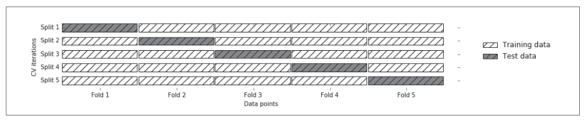
5.1.1 scikit-learn 中的交叉验证#
scikit-learn 用 model_selection 模块中的 cross_val_score 函数实现交叉验证。它的参数是：想评估的模型、训练数据与真实标签。我们在 iris 数据集上评估 LogisticRegression：
# ===== 书 5.1.1 节：cross_val_score 默认划分 =====
from sklearn.model_selection import cross_val_score
from sklearn.datasets import load_iris
from sklearn.linear_model import LogisticRegression
iris = load_iris()
logreg = LogisticRegression()
scores = cross_val_score(logreg, iris.data, iris.target)
print("Cross-validation scores: {}".format(scores))
默认情况下，cross_val_score 执行 3 折交叉验证，返回 3 个精度值。可以通过修改 cv 参数改变折数：
# ===== 书 5.1.1 节：cv=5 =====
scores = cross_val_score(logreg, iris.data, iris.target, cv=5)
print("Cross-validation scores: {}".format(scores))
总结交叉验证精度的一种常用方法是计算平均值：
# ===== 书 5.1.1 节：平均交叉验证精度 =====
print("Average cross-validation score: {:.2f}".format(scores.mean()))
从交叉验证平均值可以得出结论：预计模型的平均精度约为 96%。再看 5 个单独的分数，折与折之间的精度有较大变化——范围从 100% 到 90%。这可能意味着模型强烈依赖于将某个折用于训练，也可能只是因为数据集太小。
版本差异
原书基于 scikit-learn 0.19，cross_val_score 对所有任务默认 3 折（不分层），所以书印输出是 3 个分数。从 scikit-learn 0.22 起，分类问题的默认 cv 改为分层 5 折（StratifiedKFold(n_splits=5)），回归问题默认 5 折 KFold；1.x 延续这一行为。因此在现代环境下运行 cross_val_score(logreg, iris.data, iris.target) 会直接输出 5 个分数，数值也可能与书印略有出入（LogisticRegression 的默认求解器也从 liblinear 换成了 lbfgs，多分类从 OvR 变为 multinomial）。想精确复现书上的 3 折结果，可写 cv=KFold(n_splits=3)（见 5.1.3 第 1 小节）。
5.1.2 交叉验证的优点#
用交叉验证而不是单次划分训练集和测试集，有三大优点：
- 每个样例都刚好在测试集中出现一次。train_test_split 对数据进行随机划分：想象一下"幸运"的情形——所有难以分类的样例都落进了训练集，测试集只剩"容易分类的"样例，测试精度会高得不切实际；反过来"不够幸运"，难样例全在测试集里，分数又不切实际地低。而交叉验证中，每个样例位于一个折中，每个折都在测试集中出现一次——模型必须对数据集中所有样本的泛化能力都好，才能让所有交叉验证得分（及其平均值）都高。
- 提供模型对训练集选择的敏感性信息。iris 数据集上精度在 90% 到 100% 之间，这是个不小的范围，它告诉我们将模型应用于新数据时最坏情况和最好情况下的可能表现。
- 对数据的使用更加高效。train_test_split 通常 75% 训练、25% 评估；5 折交叉验证每次迭代可用 ⅘（80%）的数据拟合模型，10 折则可用 9/10（90%）。更多的数据通常可以得到更精确的模型。
主要缺点是计算成本：要训练 \(k\) 个模型而不是单个模型，交叉验证比单次划分大约慢 \(k\) 倍。
重要提醒：交叉验证不是一种构建可应用于新数据的模型的方法。 交叉验证不会返回一个模型。调用 cross_val_score 时，内部确实会构建多个模型，但交叉验证的目的只是评估给定算法在特定数据集上训练后的泛化性能好坏。得到最终要部署的模型，仍需另外训练。
拓展：\(k\) 折的 \(k\) 怎么选
书中给的经验值是 5 或 10，背后是三个量的拉扯：\(k\) 越大，每次训练集越大（偏差越小、更接近"用全部数据建模"的真实水平），但折与折之间的训练集重叠也越多，各折分数高度相关，平均值的方差未必更小；同时计算量线性增长。极端的 \(k=1\) 样本一折（留一法）偏差最小、方差与计算代价最大。实践中 5 折或 10 折是精度与成本的甜点区，原书作者也在访谈中说过"5 折是不错的默认值"。
5.1.3 分层k折交叉验证和其他策略#
把数据集划分为 \(k\) 折时，"从数据的前 \(k\) 分之一开始切"（上一节的默认做法）并不总是一个好主意。看 iris 数据集：
# ===== 书 5.1.3 节：iris 的标签是按顺序排列的 =====
from sklearn.datasets import load_iris
iris = load_iris()
print("Iris labels:\n{}".format(iris.target))
Iris labels:
[0 0 0 0 0 0 0 0 0 0 0 0 0 0 0 0 0 0 0 0 0 0 0 0 0 0 0 0 0 0 0 0 0 0 0 0 0
0 0 0 0 0 0 0 0 0 0 0 0 0 1 1 1 1 1 1 1 1 1 1 1 1 1 1 1 1 1 1 1 1 1 1 1 1
1 1 1 1 1 1 1 1 1 1 1 1 1 1 1 1 1 1 1 1 1 1 1 1 1 1 2 2 2 2 2 2 2 2 2 2 2
2 2 2 2 2 2 2 2 2 2 2 2 2 2 2 2 2 2 2 2 2 2 2 2 2 2 2 2 2 2 2 2 2 2 2 2 2
2 2]
数据的前三分之一全是类别 0，中间三分之一全是类别 1，最后三分之一全是类别 2。想象对这个数据集做 3 折交叉验证：第 1 折只包含类别 0，于是第一次划分中测试集只有类别 0、训练集只有类别 1 和 2——三次划分的训练集和测试集类别都对不上，3 折交叉验证精度为 0。这没什么帮助，因为我们在 iris 上能得到比 0% 好得多的精度。
简单的 \(k\) 折策略在这里失效了，所以 scikit-learn 在分类问题中不用它，而用分层 \(k\) 折交叉验证（stratified k-fold cross-validation）：划分数据时，让每个折中类别之间的比例与整个数据集中的比例相同，如图 5-2 所示。
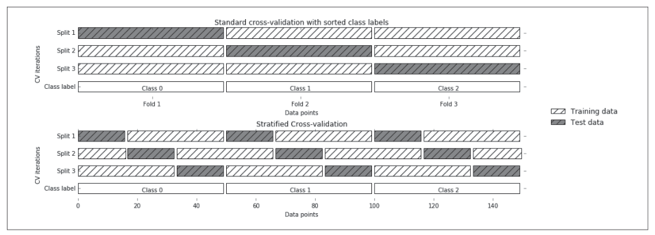
举个例子，如果 90% 的样本属于类别 A、10% 属于类别 B，分层交叉验证可以确保每个折中都是 90% A + 10% B。用分层 \(k\) 折而不是标准 \(k\) 折来评估分类器通常是个好主意，它能对泛化性能做出更可靠的估计——在 10% B 的情形下，标准 \(k\) 折很可能某一折里只有 A，拿它当测试集无法给出分类器整体性能的信息。
对回归问题，scikit-learn 默认使用标准 \(k\) 折交叉验证。也可以尝试让每个折表示回归目标的不同取值，但这并不是常用策略，也会让大多数用户感到意外。
1. 对交叉验证的更多控制#
前面用 cv 参数调节折数，但 scikit-learn 还允许提供一个交叉验证分离器（cross-validation splitter）作为 cv 参数，对划分过程做更精细的控制。大多数场景下，回归的默认 \(k\) 折与分类的分层 \(k\) 折表现都很好；但比如你想在分类数据集上用标准 \(k\) 折重现别人的结果，就需要从 model_selection 模块导入 KFold 分离器类，用想要的折数实例化：
# ===== 书 5.1.3 节第 1 小节：KFold 分离器 =====
from sklearn.model_selection import KFold
kfold = KFold(n_splits=5)
然后把 kfold 分离器对象作为 cv 参数传入 cross_val_score：
# ===== 书 5.1.3 节第 1 小节：用标准 5 折评估 iris =====
print("Cross-validation scores:\n{}".format(
cross_val_score(logreg, iris.data, iris.target, cv=kfold)))
用同样的方法可以验证：在 iris 上不分层地做 3 折交叉验证确实是个非常糟糕的主意——
# ===== 书 5.1.3 节第 1 小节：不分层的 3 折，精度为 0 =====
kfold = KFold(n_splits=3)
print("Cross-validation scores:\n{}".format(
cross_val_score(logreg, iris.data, iris.target, cv=kfold)))
iris 数据集每个折恰好对应一个类别，模型什么都学不到。另一种解决办法是打乱数据代替分层，打破样本按标签的排序：把 KFold 的 shuffle 参数设为 True。打乱之后还要固定 random_state，否则每次运行 cross_val_score 得到的结果都不同（每次用的是不同划分——这可能不是问题，但可能会出人意料）。打乱后的结果好多了：
# ===== 书 5.1.3 节第 1 小节：打乱的 3 折 =====
kfold = KFold(n_splits=3, shuffle=True, random_state=0)
print("Cross-validation scores:\n{}".format(
cross_val_score(logreg, iris.data, iris.target, cv=kfold)))
2. 留一法交叉验证#
另一种常用方法是留一法（leave-one-out）交叉验证：可以把它看作每折只包含单个样本的 \(k\) 折交叉验证——每次划分选一个数据点当测试集。它可能非常耗时（样本数 = 折数），但在小型数据集上有时能给出更好的估计结果：
# ===== 书 5.1.3 节第 2 小节：留一法 =====
from sklearn.model_selection import LeaveOneOut
loo = LeaveOneOut()
scores = cross_val_score(logreg, iris.data, iris.target, cv=loo)
print("Number of cv iterations: ", len(scores))
print("Mean accuracy: {:.2f}".format(scores.mean()))
iris 只有 150 个样本，留一法就要训练 150 个模型——"每个样本轮流当一次测试集"名副其实。
3. 打乱划分交叉验证#
另一种非常灵活的策略是打乱划分交叉验证（shuffle-split cross-validation）：每次划分为训练集取样 train_size 个点、为测试集取样 test_size 个不相交的点，将这一划分重复 n_iter 次。图 5-3 是对 10 个点的数据集运行 4 次迭代，每次训练集 5 个点、测试集 2 个点（train_size 与 test_size 可以设为整数表示绝对大小，也可以设为浮点数表示占比）：
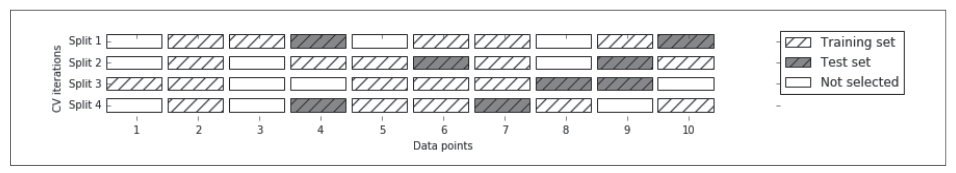
下面的代码将数据集划分为 50% 训练集 + 50% 测试集，共运行 10 次迭代（译注：此处 ShuffleSplit 未设置 random_state，你实跑的分数可能与书中不同）：
# ===== 书 5.1.3 节第 3 小节：ShuffleSplit =====
from sklearn.model_selection import ShuffleSplit
shuffle_split = ShuffleSplit(test_size=.5, train_size=.5, n_splits=10)
scores = cross_val_score(logreg, iris.data, iris.target, cv=shuffle_split)
print("Cross-validation scores:\n{}".format(scores))
打乱划分交叉验证的两大卖点：
- 可以在训练集和测试集大小之外独立控制迭代次数；
- 允许每次迭代只使用部分数据（train_size + test_size 不等于 1）——用这种方法对数据进行二次采样，对大型数据上的试验很有用。
ShuffleSplit 还有一种分层形式 StratifiedShuffleSplit，为分类任务提供更可靠的结果。
4. 分组交叉验证#
另一种非常常见的交叉验证适用于数据中的分组高度相关时。设想构建一个从人脸照片识别情感的系统，数据集收集了 100 个人的照片，每人多次拍摄、展示不同情感。目标是正确识别未包含在数据集中的人的情感。如果用默认的分层交叉验证，同一个人的照片可能同时出现在训练集和测试集中——对分类器而言，识别训练集里见过的人脸远比全新的人脸容易。为了准确评估模型对新的人脸的泛化能力，必须确保训练集和测试集包含不同人的图像。
实现这一点用 GroupKFold，它以 groups 数组作为参数，说明每张照片对应哪个人。注意两点：groups 表示数据中的分组，创建训练集和测试集时不应把同一组拆开；也不要把它与类别标签弄混。
数据分组的例子常见于医疗应用（同一病人的多个样本，想泛化到新病人）、语音识别（同一发言人的多条记录，想识别新发言人）。
下面的示例用一个由 groups 指定分组的模拟数据集：12 个数据点，前 3 个样本属于第 1 组、接下来 4 个属于第 2 组，以此类推（想想病人的例子）：
# ===== 书 5.1.3 节第 4 小节：GroupKFold 分组交叉验证 =====
from sklearn.model_selection import GroupKFold
# 创建模拟数据集
X, y = make_blobs(n_samples=12, random_state=0)
# 假设前3个样本属于同一组，接下来的4个属于同一组，以此类推
groups = [0, 0, 0, 1, 1, 1, 1, 2, 2, 3, 3, 3]
scores = cross_val_score(logreg, X, y, groups, cv=GroupKFold(n_splits=3))
print("Cross-validation scores:\n{}".format(scores))
样本不需要按分组排序，这里排序只是为了便于说明。基于这些标签计算得到的划分如图 5-4 所示——对每次划分，每个分组都整体出现在训练集或测试集中：
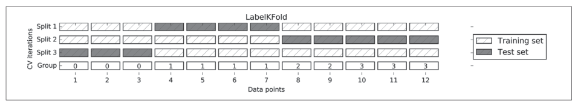
scikit-learn 还有很多交叉验证划分策略，适用于更多场景（可在用户指南页面查看：http://scikit-learn.org/stable/modules/cross_validation.html）。但标准的 KFold、StratifiedKFold 和 GroupKFold 是目前最常用的几种。
拓展：时间序列数据千万别用随机 k 折
本章所有划分策略都默认样本之间独立同分布。但股价、气温这类时间序列相邻样本强相关：随机划分会让"未来"混进训练集，模型等于偷看了答案（数据泄漏的一种）。scikit-learn 为此提供了 TimeSeriesSplit：它按时间顺序切折，训练集永远只由测试集之前的样本组成，切分线只向前滚动。做时间序列评估时记住三个词：不 shuffle、不分层、按时间滚。
5.2 网格搜索#
现在你知道了如何评估模型的泛化能力，接下来通过调参提升它。第 2、3 章讨论过 scikit-learn 中许多算法的参数设置——在尝试调参之前，重要的是理解参数的含义。找到能提供最佳泛化性能的参数取值是一项棘手的任务，但对几乎所有模型和数据集来说都是必要的。这项任务如此常见，scikit-learn 提供了标准方法帮你完成。最常用的就是网格搜索（grid search）：尝试你关心的参数的所有可能组合。
以具有 RBF（径向基函数）核的核 SVM 为例（SVC 类）。第 2 章说过它有两个重要参数：核宽度 gamma 和正则化参数 C。假设 C 尝试 0.001、0.01、0.1、1、10、100 六个取值，gamma 也取这 6 个值，总共就有 36 种参数组合，组成 SVM 的参数设置表（网格）：
| C=0.001 | C=0.01 | C=0.1 | C=1 | C=10 | C=100 | |
|---|---|---|---|---|---|---|
| gamma=0.001 | SVC(C=0.001, gamma=0.001) | SVC(C=0.01, gamma=0.001) | SVC(C=0.1, gamma=0.001) | SVC(C=1, gamma=0.001) | SVC(C=10, gamma=0.001) | SVC(C=100, gamma=0.001) |
| gamma=0.01 | SVC(C=0.001, gamma=0.01) | SVC(C=0.01, gamma=0.01) | SVC(C=0.1, gamma=0.01) | SVC(C=1, gamma=0.01) | SVC(C=10, gamma=0.01) | SVC(C=100, gamma=0.01) |
| gamma=0.1 | SVC(C=0.001, gamma=0.1) | SVC(C=0.01, gamma=0.1) | SVC(C=0.1, gamma=0.1) | SVC(C=1, gamma=0.1) | SVC(C=10, gamma=0.1) | SVC(C=100, gamma=0.1) |
| gamma=1 | SVC(C=0.001, gamma=1) | SVC(C=0.01, gamma=1) | SVC(C=0.1, gamma=1) | SVC(C=1, gamma=1) | SVC(C=10, gamma=1) | SVC(C=100, gamma=1) |
| gamma=10 | SVC(C=0.001, gamma=10) | SVC(C=0.01, gamma=10) | SVC(C=0.1, gamma=10) | SVC(C=1, gamma=10) | SVC(C=10, gamma=10) | SVC(C=100, gamma=10) |
| gamma=100 | SVC(C=0.001, gamma=100) | SVC(C=0.01, gamma=100) | SVC(C=0.1, gamma=100) | SVC(C=1, gamma=100) | SVC(C=10, gamma=100) | SVC(C=100, gamma=100) |
5.2.1 简单网格搜索#
可以用两个 for 循环实现一个朴素网格搜索：对每种参数组合分别训练并评估一个分类器。
# ===== 书 5.2.1 节：简单的网格搜索实现 =====
from sklearn.svm import SVC
X_train, X_test, y_train, y_test = train_test_split(
iris.data, iris.target, random_state=0)
print("Size of training set: {} size of test set: {}".format(
X_train.shape[0], X_test.shape[0]))
best_score = 0
for gamma in [0.001, 0.01, 0.1, 1, 10, 100]:
for C in [0.001, 0.01, 0.1, 1, 10, 100]:
# 对每种参数组合都训练一个SVC
svm = SVC(gamma=gamma, C=C)
svm.fit(X_train, y_train)
# 在测试集上评估SVC
score = svm.score(X_test, y_test)
# 如果我们得到了更高的分数，则保存该分数和对应的参数
if score > best_score:
best_score = score
best_parameters = {'C': C, 'gamma': gamma}
print("Best score: {:.2f}".format(best_score))
print("Best parameters: {}".format(best_parameters))
Size of training set: 112 size of test set: 38
Best score: 0.97
Best parameters: {'C': 100, 'gamma': 0.001}
5.2.2 参数过拟合的风险与验证集#
看到这个结果，你可能忍不住要报告"我们找到了一个精度达 97% 的模型"。然而这种说法可能过于乐观（或者就是错的），原因如下：我们尝试了许多不同的参数，并选择了在测试集上精度最高的那个，但这个精度不一定能推广到新数据上。由于我们使用测试数据进行调参，就不能再用它来评估模型的好坏了——最开始把数据划分为训练集和测试集也是因为这个原因。我们需要一个独立的数据集来评估：一个在创建模型时没有用到的数据集。
解决办法是再次划分数据，得到三个数据集：训练集（用于构建模型）、验证集（开发集）（用于选择模型/参数）、测试集（用于评估所选参数的性能）。图 5-5 给出了这三个集合的图示：
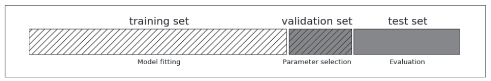
利用验证集选定最佳参数后，可以用找到的参数设置重新构建一个模型，同时在训练数据和验证数据上训练——这样能利用尽可能多的数据来构建模型：
# ===== 书 5.2.2 节：训练/验证/测试三分 + 网格搜索 =====
from sklearn.svm import SVC
# 将数据划分为 训练+验证集 与 测试集
X_trainval, X_test, y_trainval, y_test = train_test_split(
iris.data, iris.target, random_state=0)
# 将 训练+验证集 划分为 训练集 与 验证集
X_train, X_valid, y_train, y_valid = train_test_split(
X_trainval, y_trainval, random_state=1)
print("Size of training set: {} size of validation set: {} size of test set:"
" {}\n".format(X_train.shape[0], X_valid.shape[0], X_test.shape[0]))
best_score = 0
for gamma in [0.001, 0.01, 0.1, 1, 10, 100]:
for C in [0.001, 0.01, 0.1, 1, 10, 100]:
# 对每种参数组合都训练一个SVC
svm = SVC(gamma=gamma, C=C)
svm.fit(X_train, y_train)
# 在验证集上评估SVC
score = svm.score(X_valid, y_valid)
# 如果我们得到了更高的分数，则保存该分数和对应的参数
if score > best_score:
best_score = score
best_parameters = {'C': C, 'gamma': gamma}
# 在训练+验证集上重新构建一个模型，并在测试集上进行评估
svm = SVC(**best_parameters)
svm.fit(X_trainval, y_trainval)
test_score = svm.score(X_test, y_test)
print("Best score on validation set: {:.2f}".format(best_score))
print("Best parameters: ", best_parameters)
print("Test set score with best parameters: {:.2f}".format(test_score))
Size of training set: 84 size of validation set: 28 size of test set: 38
Best score on validation set: 0.96
Best parameters: {'C': 10, 'gamma': 0.001}
Test set score with best parameters: 0.92
验证集上的最高分数是 96%，比之前略低——可能因为两次划分后 X_train 更小了。而测试集分数（这个分数才实际反映模型的泛化能力）更低，为 92%。因此只能声称"对 92% 的新数据正确分类"，而不是我们之前以为的 97%！
训练集、验证集和测试集之间的区别对实践应用机器学习至关重要：任何根据测试集精度所做的选择，都会将测试集的信息"泄漏"（leak）到模型中。因此要保留一个单独的测试集，仅用于最终评估。好的做法是：利用训练集和验证集的组合完成所有探索性分析与模型选择（包括探索性可视化），把测试集留到最后一刻。严格来说，在测试集上对不止一个模型进行评估并选择更好的那个，就会导致对模型精度过于乐观的估计。
拓展：验证集的别名与来历
书中把验证集叫作"验证集（开发集）"——"开发集"即 dev set，这个叫法在深度学习文献（Goodfellow 等人的《深度学习》）里更常见：它是开发过程中"用来做决策的数据"。三类数据的分工可以记成一句话：训练集供模型学习，验证集供你决策，测试集供真相代言。测试集必须像"高考"一样只考一次，考完就换卷（生产环境中用真正的新数据），否则它的"代表性"也会被用旧。
5.2.3 带交叉验证的网格搜索#
虽然"训练/验证/测试"三分可行也相对常用，但这种方法对数据的划分方式相当敏感——对比 5.2.1 与 5.2.2 的输出：单次划分的网格搜索选了 'C': 100, 'gamma': 0.001，三分法的网格搜索选了 'C': 10, 'gamma': 0.001。为了得到对泛化性能的更好估计，可以用交叉验证来评估每种参数组合的性能，而不是仅做一次训练/验证划分：
原书笔误
原书这句写的是"网格搜索选择 'C': 10 …，而 5.2.2 节的代码输出选择 'C': 100 …"。对照书内已印的输出：5.2.2 节（三分法）实际选的是 'C': 10，选出 'C': 100 的是 5.2.1 节的单次划分朴素网格搜索——本笔记按实际输出归位。
# ===== 书 5.2.3 节：带交叉验证的朴素网格搜索 =====
# best_score 与 best_parameters 沿用 5.2.2 节代码中的定义
for gamma in [0.001, 0.01, 0.1, 1, 10, 100]:
for C in [0.001, 0.01, 0.1, 1, 10, 100]:
# 对于每种参数组合都训练一个SVC
svm = SVC(gamma=gamma, C=C)
# 执行交叉验证
scores = cross_val_score(svm, X_trainval, y_trainval, cv=5)
# 计算交叉验证平均精度
score = np.mean(scores)
# 如果我们得到了更高的分数，则保存该分数和对应的参数
if score > best_score:
best_score = score
best_parameters = {'C': C, 'gamma': gamma}
# 在训练+验证集上重新构建一个模型
svm = SVC(**best_parameters)
svm.fit(X_trainval, y_trainval)
要想用 5 折交叉验证评估 C 和 gamma 的某个特定取值组合，需要训练 5 个模型；对全部 36 种组合，共需训练 36×5 = 180 个模型。使用交叉验证的主要缺点就是训练所有这些模型所需的时间。
下面的可视化（图 5-6）说明上述代码如何选择最佳参数设置：
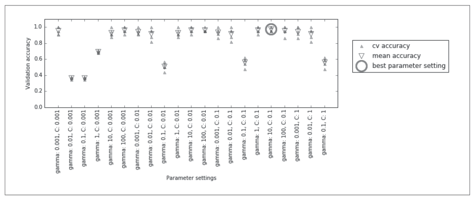
对每种参数设置（图中仅显示一部分），计算 5 个精度值——交叉验证的每次划分一个；然后对每种参数设置计算平均验证精度；最后选择平均验证精度最高的参数，用圆圈标记。
术语提醒：交叉验证是在特定数据集上对给定算法进行评估的一种方法，但它通常与网格搜索等参数搜索方法结合使用。因此许多人使用"交叉验证"这一术语来通俗地指代带交叉验证的网格搜索。
另外，用另一个估计器创建的 scikit-learn 估计器被称为元估计器（meta-estimator）。GridSearchCV 是最常用的元估计器，后文还会见到更多。
划分数据、运行网格搜索并评估最终参数，这整个过程如图 5-7 所示：
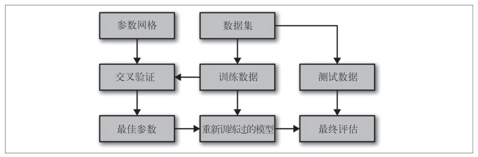
由于带交叉验证的网格搜索非常常用，scikit-learn 提供了 GridSearchCV 类，以估计器的形式实现了这种方法。使用它首先需要用一个字典指定要搜索的参数：字典的键是要调节的参数名称（构建模型时给出的，这里是 C 和 gamma），字典的值是想尝试的参数设置（取值列表）：
# ===== 书 5.2.3 节：用字典定义参数网格 =====
param_grid = {'C': [0.001, 0.01, 0.1, 1, 10, 100],
'gamma': [0.001, 0.01, 0.1, 1, 10, 100]}
print("Parameter grid:\n{}".format(param_grid))
然后用模型（SVC）、参数网格（param_grid）与交叉验证策略（比如 5 折分层交叉验证）将 GridSearchCV 实例化：
# ===== 书 5.2.3 节：实例化 GridSearchCV =====
from sklearn.model_selection import GridSearchCV
from sklearn.svm import SVC
grid_search = GridSearchCV(SVC(), param_grid, cv=5)
GridSearchCV 用交叉验证代替之前"划分训练集/验证集"的做法，但仍需要将数据划分为训练集和测试集，以避免参数过拟合：
# ===== 书 5.2.3 节：外层仍要留出测试集 =====
X_train, X_test, y_train, y_test = train_test_split(
iris.data, iris.target, random_state=0)
grid_search 对象的行为就像一个分类器，可以对它调用标准的 fit、predict 和 score 方法。但调用 fit 时，它会对 param_grid 指定的每种参数组合都运行交叉验证：
拟合 GridSearchCV 不仅会搜索最佳参数，还会利用得到最佳交叉验证性能的参数，在整个训练数据集上自动拟合一个新模型——fit 完成的工作相当于本节开头 for 循环的全部内容。GridSearchCV 用 predict 和 score 方法访问重新训练过的模型。为评估找到的最佳参数的泛化能力，在测试集上调用 score：
# ===== 书 5.2.3 节：测试集评估 =====
print("Test set score: {:.2f}".format(grid_search.score(X_test, y_test)))
利用交叉验证选择参数，我们找到了一个测试集精度 97% 的模型。重要的是：我们没有用测试集来选择参数。找到的参数保存在 best_params_ 属性中，交叉验证最佳精度（该参数设置在不同划分上的平均精度）保存在 best_score_ 中：
# ===== 书 5.2.3 节：最佳参数与最佳交叉验证分数 =====
print("Best parameters: {}".format(grid_search.best_params_))
print("Best cross-validation score: {:.2f}".format(grid_search.best_score_))
不要混淆 best_score_ 与测试集泛化性能。调用 score 方法（或评估 predict 方法的输出）用的是在整个训练集上重新训练过的模型；而 best_score_ 保存的是训练集内部交叉验证的平均精度——两者训练用的数据不一样，含义也不一样。
能够访问实际找到的模型有时很有用（比如查看系数或特征重要性），可以用 best_estimator_ 属性访问最佳参数对应的模型（在整个训练集上训练得到）：
Best estimator:
SVC(C=100, cache_size=200, class_weight=None, coef0=0.0,
decision_function_shape=None, degree=3, gamma=0.01, kernel='rbf',
max_iter=-1, probability=False, random_state=None, shrinking=True,
tol=0.001, verbose=False)
由于 grid_search 本身就有 predict 和 score 方法，通常并不需要用 best_estimator_ 来预测或评估。
版本差异
best_params_、best_score_、best_estimator_、cv_results_ 这些属性名和用法在 scikit-learn 1.x 下完全不变，可以放心使用。变化的是细节：一是 best_estimator_ 的打印内容——新版 SVC 的默认参数变了（如 decision_function_shape 默认为 'ovr' 而非 None，还多了 break_ties 等新参数），打印行更长，但关键信息（C=100、gamma=0.01）一致；二是 cv_results_ 字典在新版还包含 mean_fit_time、std_fit_time、mean_score_time 等计时列（见下一小节），列更多但原有键名都在。
1. 分析交叉验证的结果#
将交叉验证的结果可视化，通常有助于理解模型泛化能力对所搜索参数的依赖关系。由于运行网格搜索的计算成本相当高，通常最好从相对稀疏、较小的网格开始搜索，检查结果后再扩展搜索范围。网格搜索的结果保存在 cv_results_ 属性中——一个保存了搜索所有内容的字典，里面细节很多，最好转换成 pandas 数据框（DataFrame）后查看：
# ===== 书 5.2.3 节第 1 小节：cv_results_ 转 DataFrame =====
import pandas as pd
# 转换为DataFrame（数据框）
results = pd.DataFrame(grid_search.cv_results_)
# 显示前5行（display 是 Jupyter 的富文本展示函数）
display(results.head())
每行对应一种参数设置。书中输出（删节）：
| param_C | param_gamma | params | mean_test_score | rank_test_score | split0 | split1 | split2 | split3 | split4 | std_test_score | |
|---|---|---|---|---|---|---|---|---|---|---|---|
| 0 | 0.001 | 0.001 | {'C': 0.001, 'gamma': 0.001} | 0.366 | 22 | 0.375 | 0.347 | 0.363 | 0.363 | 0.380 | 0.011 |
| 1 | 0.001 | 0.01 | {'C': 0.001, 'gamma': 0.01} | 0.366 | 22 | 0.375 | 0.347 | 0.363 | 0.363 | 0.380 | 0.011 |
| 2 | 0.001 | 0.1 | {'C': 0.001, 'gamma': 0.1} | 0.366 | 22 | 0.375 | 0.347 | 0.363 | 0.363 | 0.380 | 0.011 |
| 3 | 0.001 | 1 | {'C': 0.001, 'gamma': 1} | 0.366 | 22 | 0.375 | 0.347 | 0.363 | 0.363 | 0.380 | 0.011 |
| 4 | 0.001 | 10 | {'C': 0.001, 'gamma': 10} | 0.366 | 22 | 0.375 | 0.347 | 0.363 | 0.363 | 0.380 | 0.011 |
results 中每一行对应一种特定的参数设置：交叉验证所有划分的结果都被记录下来，平均值和标准差也被记录。我们搜索的是二维参数网格（C 和 gamma），最适合用热图可视化。先提取平均验证分数，再把分数数组改变形状（reshape），使两个坐标轴分别对应 C 和 gamma：
# ===== 书 5.2.3 节第 1 小节：参数热图 =====
scores = np.array(results.mean_test_score).reshape(6, 6)
# 对交叉验证平均分数作图
mglearn.tools.heatmap(scores, xlabel='gamma', xticklabels=param_grid['gamma'],
ylabel='C', yticklabels=param_grid['C'], cmap="viridis")
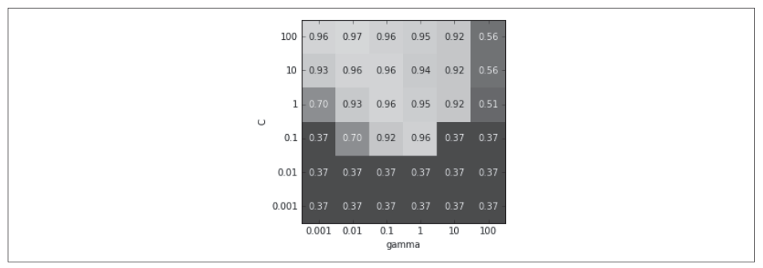
热图中的每个点对应运行一次交叉验证及一种特定参数设置；颜色表示交叉验证精度：浅色高、深色低。可以看出 SVC 对参数设置非常敏感：许多参数设置下精度只有 40% 左右，而其他设置约 96%。从这张图能读出三点：
- 调参很重要：C 和 gamma 两个参数都重要，调节它们可以把精度从 40% 提到 96%。
- 参数范围要足够大：在所选范围中输出发生了显著变化；同时每个参数的最佳取值不能位于图像的边界上——贴边就说明边界外可能还有更好的值。
- 从热图出发迭代：先粗网格定位"高亮区域"，再围着它细化。
图 5-9 给出三张"不那么理想"的热图——选择的搜索范围不合适：
# ===== 书 5.2.3 节第 1 小节：三种坏网格 =====
fig, axes = plt.subplots(1, 3, figsize=(13, 5))
param_grid_linear = {'C': np.linspace(1, 2, 6),
'gamma': np.linspace(1, 2, 6)}
param_grid_one_log = {'C': np.linspace(1, 2, 6),
'gamma': np.logspace(-3, 2, 6)}
param_grid_range = {'C': np.logspace(-3, 2, 6),
'gamma': np.logspace(-7, -2, 6)}
for param_grid, ax in zip([param_grid_linear, param_grid_one_log,
param_grid_range], axes):
grid_search = GridSearchCV(SVC(), param_grid, cv=5)
grid_search.fit(X_train, y_train)
scores = grid_search.cv_results_['mean_test_score'].reshape(6, 6)
# 对交叉验证平均分数作图
scores_image = mglearn.tools.heatmap(
scores, xlabel='gamma', ylabel='C', xticklabels=param_grid['gamma'],
yticklabels=param_grid['C'], cmap="viridis", ax=ax)
plt.colorbar(scores_image, ax=axes.tolist())
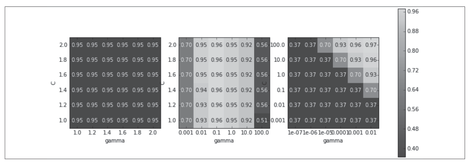
逐张看：
- 第一张图：整个参数网格颜色相同、没有任何变化。这里是 C 和 gamma 的缩放（线性而非对数）与范围都不对导致的。但如果换了范围仍然看不到精度变化，也可能说明这个参数根本不重要。通常最好一开始就尝试非常极端的值，观察改变参数是否会引起精度变化。
- 第二张图：垂直条形模式——只有 gamma 的设置影响精度。可能意味着 gamma 的搜索范围才是你关心的、C 不重要，也可能意味着 C 这个参数本身不重要。
- 第三张图：C 和 gamma 对应的精度都有变化，但整个左下角"什么有趣的事都没发生"——后续搜索可以砍掉非常小的值。最佳参数出现在右上角边界上：边界之外很可能还有更好的取值，应扩大搜索范围。
基于交叉验证分数来调节参数网格是非常好的做法，也是探索不同参数重要性的好方法。但不应在最终测试集上测试不同的参数范围——只有确切知道了想使用的模型，才能对测试集进行评估。
拓展：参数网格为什么习惯按 10 的幂取值
C、gamma 这类"强度"参数的作用是乘性的：从 0.1 到 0.2 引起的模型变化，远小于从 1 到 2。所以扫参数习惯在对数刻度上均匀取样（0.001 → 100，每步 ×10 或 ×10^(⅓)），而不是线性刻度（np.linspace(1, 2, 6) 这种线性网格把全部预算花在了同一个"量级"里，图 5-9 左图就是这么废掉的）。另一条经验：网格结果贴边就扩边，热图大片同色就换刻度。
2. 在非网格的空间中搜索#
某些情况下，尝试所有参数的所有可能组合（GridSearchCV 的默认行为）并不是好主意。比如 SVC 有一个 kernel 参数，其他参数的有效性取决于所选 kernel：kernel='linear' 时模型是线性的，只用到 C；kernel='rbf' 时需要 C 和 gamma（但用不到 degree 之类的参数）。在这种情况下搜索 C、gamma、kernel 的所有组合没有意义：kernel='linear' 时 gamma 根本用不上，尝试它的不同取值纯属浪费。为了处理这种"条件（conditional）参数"，GridSearchCV 的 param_grid 可以是字典组成的列表（a list of dictionaries）：列表中的每个字典扩展为一个独立的网格。
# ===== 书 5.2.3 节第 2 小节：条件参数用字典列表 =====
param_grid = [{'kernel': ['rbf'],
'C': [0.001, 0.01, 0.1, 1, 10, 100],
'gamma': [0.001, 0.01, 0.1, 1, 10, 100]},
{'kernel': ['linear'],
'C': [0.001, 0.01, 0.1, 1, 10, 100]}]
print("List of grids:\n{}".format(param_grid))
List of grids:
[{'kernel': ['rbf'], 'C': [0.001, 0.01, 0.1, 1, 10, 100],
'gamma': [0.001, 0.01, 0.1, 1, 10, 100]},
{'kernel': ['linear'], 'C': [0.001, 0.01, 0.1, 1, 10, 100]}]
第一个网格中 kernel 始终等于 'rbf'（注意 kernel 是长度为 1 的列表——固定取值也要放进列表），C 和 gamma 都变化；第二个网格中 kernel 始终等于 'linear'，只有 C 变化。应用这个更复杂的参数搜索：
# ===== 书 5.2.3 节第 2 小节：对字典列表运行网格搜索 =====
grid_search = GridSearchCV(SVC(), param_grid, cv=5)
grid_search.fit(X_train, y_train)
print("Best parameters: {}".format(grid_search.best_params_))
print("Best cross-validation score: {:.2f}".format(grid_search.best_score_))
再查看 cv_results_（译注：原书此处输出有删节，完整表为 23 行 × 42 列——rbf 网格 36 种组合 + linear 网格 6 种组合）。正如所料，kernel='linear' 时只有 C 变化，param_gamma 一列为 NaN。摘取书中转置表格的关键几行：
| 0 | 1 | 2 | 3 | … | 38 | 39 | 40 | 41 | |
|---|---|---|---|---|---|---|---|---|---|
| param_C | 0.001 | 0.001 | 0.001 | 0.001 | … | 0.1 | 1 | 10 | 100 |
| param_gamma | 0.001 | 0.01 | 0.1 | 1 | … | NaN | NaN | NaN | NaN |
| param_kernel | rbf | rbf | rbf | rbf | … | linear | linear | linear | linear |
| mean_test_score | 0.37 | 0.37 | 0.37 | 0.37 | … | 0.95 | 0.97 | 0.96 | 0.96 |
| rank_test_score | 27 | 27 | 27 | 27 | … | 11 | 1 | 3 | 3 |
3. 使用不同的交叉验证策略进行网格搜索#
与 cross_val_score 类似，GridSearchCV 对分类问题默认使用分层 \(k\) 折交叉验证，对回归问题默认使用 \(k\) 折交叉验证。你也可以传入任何交叉验证分离器作为 cv 参数（原理与 5.1.3 第 1 小节相同）。特别地，如果只想将数据单次划分为训练集和验证集，可以用 ShuffleSplit 或 StratifiedShuffleSplit 并设 n_iter=1——这对非常大的数据集或非常慢的模型可能有帮助。
原书笔误
原书此处写"正如 2.1.3 节中的'对交叉验证的更多控制'部分所述"——该内容实际位于本章 5.1.3 节第 1 小节，并非第 2 章。
（1）嵌套交叉验证#
前面的流程是：单次三分（训练/验证/测试）→ 先分训练/测试、再在训练集上交叉验证。但使用 GridSearchCV 时我们仍然单次划分了训练集和测试集，这可能导致结果不稳定、过于依赖数据的这一次划分。可以再深入一步：不是只将原始数据一次划分为训练集和测试集，而是用交叉验证进行多次划分——这就是嵌套交叉验证（nested cross-validation）。
嵌套交叉验证有两层循环：
- 外层循环遍历将数据划分为训练集和测试集的所有划分；
- 对每种外层划分，运行一次完整的网格搜索（内层循环；不同外层划分可能得到不同的最佳参数），然后用该划分的最佳参数计算外层测试集分数。
这一过程的结果是由分数组成的列表——不是一个模型，也不是一种参数设置。这些分数告诉我们：在网格找到的最佳参数下，模型的泛化能力如何。由于嵌套交叉验证不提供可用于新数据的模型，所以在寻找可用于未来数据的预测模型时很少用到它；但它对评估给定模型在特定数据集上的效果很有用。
在 scikit-learn 中实现嵌套交叉验证简单得出乎意料：调用 cross_val_score，把 GridSearchCV 的一个实例当作模型传进去：
# ===== 书 5.2.3 节第 3 小节（1）：嵌套交叉验证一行版 =====
scores = cross_val_score(GridSearchCV(SVC(), param_grid, cv=5),
iris.data, iris.target, cv=5)
print("Cross-validation scores: ", scores)
print("Mean cross-validation score: ", scores.mean())
嵌套交叉验证的结果可以总结为一句话："SVC 在 iris 数据集上的交叉验证平均精度为 98%"——不多也不少。这里内层和外层都用了分层 5 折交叉验证，param_grid 包含 36 种参数组合，所以需要构建 36×5×5 = 900 个模型——嵌套交叉验证的代价很高。内层和外层可以用任意交叉验证策略组合，不必相同。
一行代码的信息量可能有点大，把它展开成 for 循环（下面这个简化的实现）会清楚很多：
# ===== 书 5.2.3 节第 3 小节（1）：嵌套交叉验证展开版 =====
def nested_cv(X, y, inner_cv, outer_cv, Classifier, parameter_grid):
outer_scores = []
# 对于外层交叉验证的每次数据划分，split方法返回索引值
for training_samples, test_samples in outer_cv.split(X, y):
# 利用内层交叉验证找到最佳参数
best_params = {} # 原书此处误写为 best_parms（该变量从未被使用，不影响运行）
best_score = -np.inf
# 遍历参数
for parameters in parameter_grid:
# 在内层划分中累加分数
cv_scores = []
# 遍历内层交叉验证
for inner_train, inner_test in inner_cv.split(
X[training_samples], y[training_samples]):
# 对于给定的参数和训练数据来构建分类器
clf = Classifier(**parameters)
clf.fit(X[inner_train], y[inner_train])
# 在内层测试集上进行评估
score = clf.score(X[inner_test], y[inner_test])
cv_scores.append(score)
# 计算内层交叉验证的平均分数
mean_score = np.mean(cv_scores)
if mean_score > best_score:
# 如果比前面的模型都要好，则保存其参数
best_score = mean_score
best_params = parameters
# 利用外层训练集和最佳参数来构建模型
clf = Classifier(**best_params)
clf.fit(X[training_samples], y[training_samples])
# 评估模型
outer_scores.append(clf.score(X[test_samples], y[test_samples]))
return np.array(outer_scores)
在 iris 数据集上运行：
# ===== 书 5.2.3 节第 3 小节（1）：运行展开版 =====
from sklearn.model_selection import ParameterGrid, StratifiedKFold
scores = nested_cv(iris.data, iris.target, StratifiedKFold(5),
StratifiedKFold(5), SVC, ParameterGrid(param_grid))
print("Cross-validation scores: {}".format(scores))
与一行版结果一致。
拓展：嵌套交叉验证为什么「无偏」
普通网格搜索 + 外层一次测试的流程里，"最佳参数"是从训练数据中挑出来的，但如果你反复用同一个测试集评估多组超参数，测试集信息会悄悄漏进选择过程——报告的分数仍可能乐观。嵌套 CV 的关键在于：每一折的最佳参数都只用该折的训练部分选出，测试部分从始至终没参与任何选择，所以每个外层分数都是对"这条完整流水线（含调参）"的干净估计。这也是论文里报告"模型 + 调参"整体性能的标准做法（Varma & Simon, 2006 对其无偏性有正式讨论）。代价是模型数量指数级增长，所以嵌套 CV 多用于评估，不用来产出最终模型。
（2）交叉验证与网格搜索并行#
在许多参数上、在大数据集上运行网格搜索的计算量可能很大，但令人宽慰的是，这些计算都是可并行的（parallel）：在一种交叉验证划分下用特定参数构建一个模型，与其他参数的模型完全独立。这使得网格搜索与交叉验证成为多 CPU 内核或集群上并行化的理想选择。将 n_jobs 参数设置为你想使用的 CPU 内核数量，即可在 GridSearchCV 和 cross_val_score 中使用多个内核；设 n_jobs=-1 使用所有可用内核。
注意两点：
- scikit-learn 不允许并行操作的嵌套。如果模型（比如随机森林）内部用了 n_jobs 选项，就不能再在 GridSearchCV 上对它用 n_jobs 搜索。
- 数据集和模型都很大时，多内核并行可能占用大量内存，构建大型模型时应监视内存使用。
还可以在集群内多台机器上并行（写作本书时 scikit-learn 尚不支持）。不介意手写 for 循环的话，可用 IPython 并行框架做并行网格搜索；Spark 用户可以用 spark-sklearn 包（https://github.com/databricks/spark-sklearn）在已有 Spark 集群上运行网格搜索。
5.3 评估指标与评分#
到目前为止，我们用精度（正确分类的样本所占的比例）评估分类性能，用 \(R^2\) 评估回归性能。但总结监督模型在给定数据集上的表现有多种方法，这两个只是其中两种。实践中它们可能不适用于你的应用——在选择模型与调参时，选择正确的指标很重要。
5.3.1 牢记最终目标#
选择指标时应始终牢记机器学习应用的最终目标。实践中我们通常不仅关心精确的预测，还要把预测结果用于更大的决策过程。在选择机器学习指标之前，应考虑应用的高级目标，这通常被称为商业指标（business metric）；对一个机器学习应用选择特定算法的结果被称为商业影响（business impact）（译注：作者在脚注里请有科学头脑的读者原谅这一节的商业语言——"不忘最终目标"在科学中同样重要，只是他想不出与"商业影响"含义相同的科学词汇）。高级目标可能是避免交通事故、减少入院人数，也可能是吸引更多网站用户、让用户花更多钱。选择模型或调参时，应选择对商业指标具有最大正面影响的模型或参数值。
这通常很难：要评估某个模型的商业影响，可能需要把它放到真实的生产环境中。而在开发初期就为测试而把模型投入生产往往不可行——可能涉及很高的商业风险或个人风险。想象一下，为了测试无人驾驶汽车的行人避让能力，不经验证直接让它上路——如果模型很糟糕，行人就会遇到麻烦！因此通常需要找到某种替代的评估程序，用更容易计算的评估指标，例如对行人和非行人的图片分类并测量精度。请记住这只是替代品：找到与原始商业目标最接近的可评估指标很有用，应尽可能用这个最接近的指标做模型评估与选择。评估结果可能不是一个数字——算法的结果可能是"顾客多了 10%，但每位顾客的花费减少了 15%"——但它应该能给出"选这个模型而不选那个"的预期商业影响。
本节先讨论二分类这一重要特例的指标，然后转向多分类，最后讨论回归。
5.3.2 二分类指标#
二分类可能是实践中最常见的机器学习应用，也是概念最简单的应用——但即使评估这个简单任务也有注意事项。在深入研究替代指标之前，先看精度会如何误导我们。对于二分类问题，我们通常说正类（positive class）和反类（negative class），而正类是我们要寻找的类。
1. 错误类型#
通常来说，精度并不能很好地度量预测性能，因为错误的数量并不包含我们感兴趣的所有信息。想象一个用自动化测试筛查癌症的应用：测试结果为阴性则认为患者健康，阳性则需要接受额外筛查。这里把阳性测试结果（表示患癌症）称为正类，阴性称为反类。模型不是完美的，它也会犯错——对任何应用都要问：这些错误在现实世界中可能有什么后果？
- 一种错误是健康的人被诊断为阳性，导致额外的检查：花费、不便（可能还有精神痛苦）。错误的阳性预测叫作假正例（false positive，FP）。
- 另一种错误是患病的人被诊断为阴性，因此不会接受进一步的检查和治疗：未诊断出的癌症可能导致严重健康问题甚至死亡。这种错误的阴性预测叫作假反例（false negative，FN）。
在统计学中，假正例也叫第一类错误（type I error），假反例也叫第二类错误（type II error）。本书坚持使用"假正例/假反例"，因为含义更明确、更好记。在癌症诊断的例子中，我们希望尽量避免假反例，而假正例可以被看作小麻烦。
这是一个特别极端的例子，但假正例和假反例造成的后果很少相同。在商业应用中，可以为两种错误分配美元值——用美元而不是精度来度量预测结果的错误，对"选哪个模型"的商业决策可能更有意义。
2. 不平衡数据集#
如果两个类别中一个的出现次数比另一个多很多，错误类型就会发挥重要作用。实践中这十分常见。一个好例子是点击（click-through）预测：每个数据点表示一个"印象"（impression，向用户展示的一个物项——广告、相关故事或推荐关注的人），目标是预测用户是否会点击。用户对互联网上展示的大多数内容（尤其是广告）都不会点击——可能要展示 100 个广告或文章，才有一次点击。于是数据集里每 99 个"未点击"才有 1 个"已点击"：99% 的样本属于"未点击"。这种一个类别远多于另一个类别的数据集叫作**不平衡数据集（imbalanced dataset）**或具有不平衡类别的数据集。实际当中，不平衡才是常态，类别出现次数相同或相似的情况十分罕见。
现在假设你构建了一个在点击预测任务中精度达 99% 的分类器——这告诉你什么？99% 听起来令人印象深刻，但它没考虑类别不平衡：你不必构建任何机器学习模型，始终预测"未点击"就能得到 99% 的精度。另一方面，不平衡数据上真正的好模型精度也可能达到 99%——精度无法帮我们区分"不变的 '未点击' 模型"与"潜在的优秀模型"。
用 digits 数据集制造一个不平衡任务来演示：把数字 9 与其他九个类别区分开，得到 9:1 的不平衡数据集：
# ===== 书 5.3.2 节第 2 小节：构造"9 与其他"的不平衡数据集 =====
from sklearn.datasets import load_digits
digits = load_digits()
y = digits.target == 9
X_train, X_test, y_train, y_test = train_test_split(
digits.data, y, random_state=0)
先用 DummyClassifier 始终预测多数类（"非 9"），看看精度给出的信息量有多少：
# ===== 书 5.3.2 节第 2 小节：总是预测多数类 =====
from sklearn.dummy import DummyClassifier
dummy_majority = DummyClassifier(strategy='most_frequent').fit(X_train, y_train)
pred_most_frequent = dummy_majority.predict(X_test)
print("Unique predicted labels: {}".format(np.unique(pred_most_frequent)))
print("Test score: {:.2f}".format(dummy_majority.score(X_test, y_test)))
接近 90% 的精度，却没学到任何内容。有人告诉你他的模型精度 90%，你可能觉得不错——但根据具体问题，也可能只是预测了一个类别！再和一个真实分类器对比：
# ===== 书 5.3.2 节第 2 小节：深度为 2 的决策树 =====
from sklearn.tree import DecisionTreeClassifier
tree = DecisionTreeClassifier(max_depth=2).fit(X_train, y_train)
pred_tree = tree.predict(X_test)
print("Test score: {:.2f}".format(tree.score(X_test, y_test)))
从精度看，DecisionTreeClassifier 只比常数预测好一点。这可能表示我们用错了方法，也可能说明精度在这里不是一个好度量。为便于对比，再评估两个分类器：LogisticRegression，以及默认的 DummyClassifier（后者进行随机预测，但预测类别的比例与训练集中比例相同；译注：未设置 random_state，你的结果可能和书中不同）：
# ===== 书 5.3.2 节第 2 小节：随机 dummy 与 LogisticRegression =====
from sklearn.linear_model import LogisticRegression
dummy = DummyClassifier().fit(X_train, y_train)
pred_dummy = dummy.predict(X_test)
print("dummy score: {:.2f}".format(dummy.score(X_test, y_test)))
logreg = LogisticRegression(C=0.1).fit(X_train, y_train)
pred_logreg = logreg.predict(X_test)
print("logreg score: {:.2f}".format(logreg.score(X_test, y_test)))
显而易见，产生随机输出的虚拟分类器最差（精度最低），LogisticRegression 非常好。但随机分类器也有超过 80% 的精度，这让人很难判断哪些结果真正有帮助。问题在于：对不平衡数据的预测性能进行量化，精度并不是合适的度量。接下来要找的指标应该能告诉我们：一个模型比"最常见"预测（pred_most_frequent）或随机预测（pred_dummy）好多少——好的指标应该能淘汰这些无意义的预测。
版本差异
原书 0.19 里 DummyClassifier() 的默认策略是 'stratified'（按训练集类别比例随机猜），所以书印 dummy 分数是 0.80。scikit-learn 1.x 中默认策略改成了 'prior'（predict 时确定性地输出先验最大的类别，等价于 most_frequent），直接照抄代码会得到 0.90。要复现书中的随机 dummy，请显式写 DummyClassifier(strategy='stratified')。
3. 混淆矩阵#
对二分类评估结果，一种最全面的表示是混淆矩阵（confusion matrix）。用 confusion_matrix 函数检查上一节 LogisticRegression 的预测结果（已保存在 pred_logreg 中）：
# ===== 书 5.3.2 节第 3 小节：混淆矩阵 =====
from sklearn.metrics import confusion_matrix
confusion = confusion_matrix(y_test, pred_logreg)
print("Confusion matrix:\n{}".format(confusion))
confusion_matrix 的输出是 2×2 数组：行对应真实的类别，列对应预测的类别，每个元素给出"真实属于该行类别的样本被分类到该列类别的数量"（脚注：对二维数组 A，其主对角线是 A[i, i]）。图 5-10 说明了这一含义：
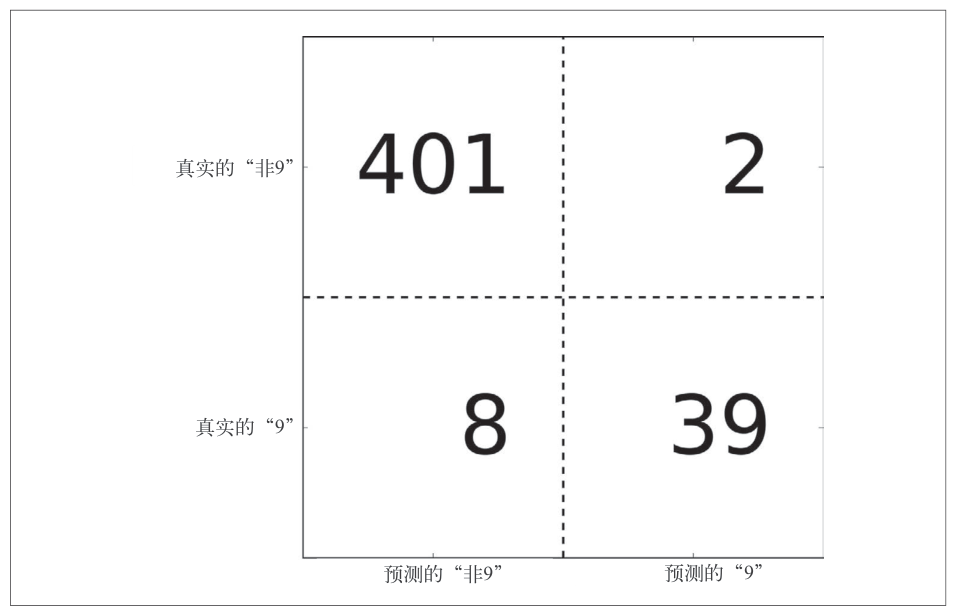
混淆矩阵主对角线上的元素对应正确分类，其他元素告诉我们一个类别中有多少样本被错误划分到其他类别。如果把"9"作为正类，就可以把矩阵元素与假正例、假反例联系起来。为使图像完整，把正类中正确分类的样本称为真正例（true positive，TP），反类中正确分类的样本称为真反例（true negative，TN）。四个术语缩写为 TP、TN、FP、FN，得到图 5-11 的解释：
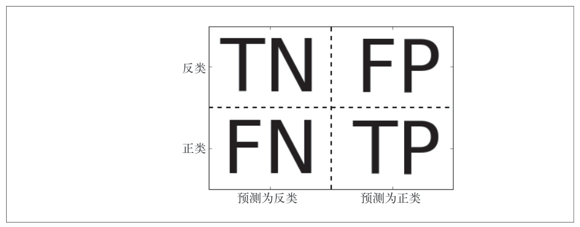
用混淆矩阵比较前面拟合过的四个模型（两个虚拟模型、决策树、Logistic 回归）：
# ===== 书 5.3.2 节第 3 小节：四个模型的混淆矩阵对比 =====
print("Most frequent class:")
print(confusion_matrix(y_test, pred_most_frequent))
print("\nDummy model:")
print(confusion_matrix(y_test, pred_dummy))
print("\nDecision tree:")
print(confusion_matrix(y_test, pred_tree))
print("\nLogistic Regression")
print(confusion_matrix(y_test, pred_logreg))
Most frequent class:
[[403 0]
[ 47 0]]
Dummy model:
[[361 42]
[ 43 4]]
Decision tree:
[[390 13]
[ 24 23]]
Logistic Regression
[[401 2]
[ 8 39]]
- pred_most_frequent 有明显问题：它总是预测同一个类别（第二列全 0——没有任何"9"被判为正类）。
- pred_dummy 的真正例只有 4 个，尤其与假反例（43）和假正例（42）相比——假正例的数量竟然比真正例还多！
- 决策树的预测比虚拟预测更有意义，即使二者精度几乎相同（0.92 vs 0.80 之外，树的四格分布合理得多）。
- Logistic 回归全面好于决策树：真正例和真反例更多，假正例和假反例更少。
从这个对比可以明确看出：只有决策树和 Logistic 回归给出了合理结果，且 Logistic 回归全面更优。但检查整个混淆矩阵有点麻烦——虽然能获得很多深入见解，但这个过程是人工的、定性的。下面用几种方法总结混淆矩阵中的信息。
与精度的关系。精度就是从混淆矩阵总结出的第一种方法：
也就是说，精度是正确预测的数量（TP 和 TN）除以所有样本的数量（混淆矩阵所有元素之和）。
准确率、召回率与 f-分数。最常见的总结是准确率和召回率。准确率（precision）度量的是被预测为正例的样本中有多少是真正的正例：
如果目标是限制假正例的数量，用准确率作指标。例如一个预测新药临床试验是否有效的模型：临床试验非常昂贵，制药公司只有在非常确定药物有效时才会试验——模型不产生很多假正例很重要，即准确率要高。准确率也被称为阳性预测值（positive predictive value，PPV）。
召回率（recall）度量的是正类样本中有多少被预测为正类：
如果需要找出所有的正类样本（避免假反例很重要），用召回率。癌症诊断就是好例子：找出所有患病的人很重要，预测结果中可以包含健康的人。召回率的其他名称：灵敏度（sensitivity）、命中率（hit rate）、真正例率（true positive rate，TPR）。
优化召回率与优化准确率之间需要折中：
- 把所有样本都预测为正类，可以轻松得到完美召回率——没有假反例（也没有真反例），但会得到大量假正例，准确率很低。
- 只把一个最有把握的点预测为正类、其余全预测为反类，准确率会完美（假设这个点确实是正类），但召回率非常差。
侧栏：准确率和召回率只是从 TP、FP、TN、FN 导出的众多分类度量中的两个。所有度量的摘要在 Wikipedia 上（https://en.wikipedia.org/wiki/Sensitivity_and_specificity）。机器学习社区最常用准确率和召回率，其他社区可能使用其他相关指标。
只看准确率或召回率之一都无法提供完整图景。把两种度量汇总的一种方法是 f-分数（f-score）/ f-度量（f-measure）——准确率与召回率的调和平均：
这一特定变体也称为 f1-分数（f1-score）。它同时考虑准确率和召回率，对不平衡的二分类数据集是比精度更好的度量。对"9 与其余"数据集的四个预测结果计算 f1-分数（"9"类是正类，标记为 True；正类是少数类）：
# ===== 书 5.3.2 节第 3 小节：四个模型的 f1 分数 =====
from sklearn.metrics import f1_score
print("f1 score most frequent: {:.2f}".format(
f1_score(y_test, pred_most_frequent)))
print("f1 score dummy: {:.2f}".format(f1_score(y_test, pred_dummy)))
print("f1 score tree: {:.2f}".format(f1_score(y_test, pred_tree)))
print("f1 score logistic regression: {:.2f}".format(
f1_score(y_test, pred_logreg)))
f1 score most frequent: 0.00
f1 score dummy: 0.10
f1 score tree: 0.55
f1 score logistic regression: 0.89
这里有两件事要看清：第一，most_frequent 的预测产生一条警告信息（书中称"错误信息"），因为预测的正类数量为 0，f-分数的分母为 0；第二，虚拟预测与决策树预测之间出现了很大区别（0.10 vs 0.55），而只看精度时二者区别并不明显。f1-分数比精度更符合我们对"好模型"的直觉，缺点是比精度更难解释。
拓展：调和平均为什么「偏袒」小的那个
调和平均的脾气：两数中较小的一方对结果影响更大。precision=1.0、recall=0.1 时，算术平均 0.55 看起来还行，调和平均只有 \(2 \cdot (1 \times 0.1)/(1+0.1) \approx 0.18\)；只要有一项为 0，F1 就是 0。"全预测为正类"骗来的完美召回率，会被极低的准确率狠狠拉低——这正是 F1 想要的效果：只有两个都高，F1 才高。一般化版本是 \(F_\beta = (1+\beta^2) \cdot \frac{p \cdot r}{\beta^2 p + r}\)：β>1 时更看重召回（如 β=2 常用于"宁错杀不放过"的场景），β<1 更看重准确率。
如果想要对准确率、召回率和 f1-分数做更全面的总结，可以用 classification_report 函数，同时计算三个值并以美观格式打印：
# ===== 书 5.3.2 节第 3 小节：most_frequent 的分类报告 =====
from sklearn.metrics import classification_report
print(classification_report(y_test, pred_most_frequent,
target_names=["not nine", "nine"]))
precision recall f1-score support
not nine 0.90 1.00 0.94 403
nine 0.00 0.00 0.00 47
avg / total 0.80 0.90 0.85 450
classification_report 为每个类别生成一行（这里 True 和 False），给出以该类别作为正类的准确率、召回率和 f-分数。前面我们把较少的"9"类当正类；如果换成"not nine"当正类，most_frequent 模型的 f-分数就是 0.94——因为"not nine"召回率为 1（所有样本都被判为 not nine）。f-分数旁边的最后一列是支持（support）：该类别中真实样本的数量。报告最后一行是各指标的加权平均（按每个类别的样本数加权）。再看两个报告——虚拟分类器的（译注：未设置 random_state，结果可能与书中不同）和 Logistic 回归的：
# ===== 书 5.3.2 节第 3 小节：dummy 的分类报告 =====
print(classification_report(y_test, pred_dummy,
target_names=["not nine", "nine"]))
precision recall f1-score support
not nine 0.90 0.92 0.91 403
nine 0.11 0.09 0.10 47
avg / total 0.81 0.83 0.82 450
# ===== 书 5.3.2 节第 3 小节：logreg 的分类报告 =====
print(classification_report(y_test, pred_logreg,
target_names=["not nine", "nine"]))
precision recall f1-score support
not nine 0.98 1.00 0.99 403
nine 0.95 0.83 0.89 47
avg / total 0.98 0.98 0.98 450
查看报告时你可能注意到：虚拟模型与好模型之间的区别不再那么明显——正类选哪个对指标影响很大。以"nine"为正类时，虚拟分类 f-分数 0.10（对比 Logistic 回归的 0.89）；以"not nine"为正类时二者分别是 0.91 和 0.99，看起来都挺合理。不过同时查看所有数字可以给出非常准确的图像：Logistic 回归在两行上都高，虚拟模型只在多数类上好看。
版本差异
新版 scikit-learn（0.20+）的 classification_report 最后一行不再是 avg / total，而是拆成三行：accuracy（一个标量放在 accuracy 列）、macro avg、weighted avg。数字含义不变，排版变了。
4. 考虑不确定性#
混淆矩阵和分类报告为一组特定的预测提供了详细分析，但预测本身已经丢弃了模型包含的大量信息。第 2 章讲过：大多数分类器都提供 decision_function 或 predict_proba 方法来评估预测的不确定度。预测可以看作"以某个固定点作为 decision_function 或 predict_proba 输出的阈值"——二分类中，decision_function 的阈值是 0，predict_proba 的阈值是 0.5。
下面是一个不平衡二分类任务：反类 400 个点、正类 50 个点。训练一个核 SVM，把决策函数值画成热图（图 5-12）：图像偏上位置有个黑色圆圈，是 decision_function 阈值刚好为 0 的位置——圆圈内的点划为正类，圆圈外划为反类：
# ===== 书 5.3.2 节第 4 小节：不平衡 blobs + 核 SVM =====
from mglearn.datasets import make_blobs
X, y = make_blobs(n_samples=(400, 50), centers=2, cluster_std=[7.0, 2],
random_state=22)
X_train, X_test, y_train, y_test = train_test_split(X, y, random_state=0)
svc = SVC(gamma=.05).fit(X_train, y_train)
mglearn.plots.plot_decision_threshold()
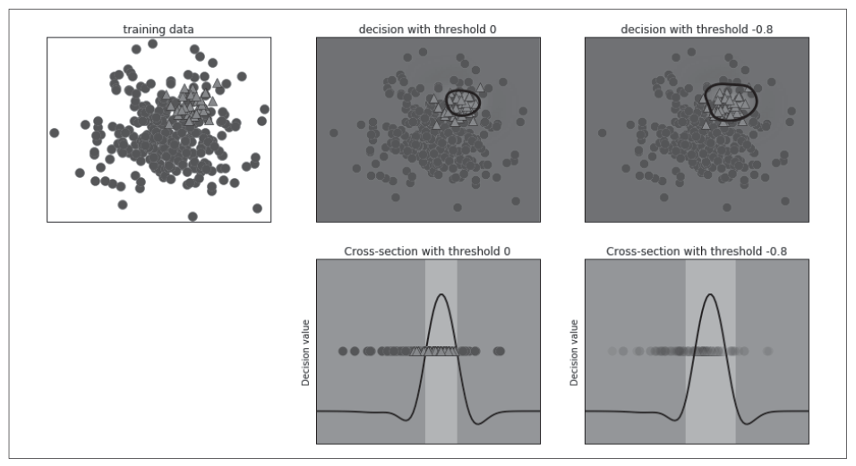
用 classification_report 评估两个类别的准确率与召回率：
precision recall f1-score support
0 0.97 0.89 0.93 104
1 0.35 0.67 0.46 9
avg / total 0.92 0.88 0.89 113
类别 1 的准确率相当低，召回率则"令人糊涂"（mixed）。因为类别 0 大得多，分类器把重点放在把类别 0 分类正确，而不是较小的类别 1。
假设应用中类别 1 具有高召回率更重要（就像癌症筛查的例子）：愿意冒更多假正例的风险，换取更多真正例（增大召回率）。svc.predict 无法满足这个要求，但可以改变决策阈值（不等于 0）把预测重点放在类别 1 的召回率上。默认 decision_function 值大于 0 的点划为类别 1；想让更多点划为类别 1，就要减小阈值：
# ===== 书 5.3.2 节第 4 小节：把阈值降到 -0.8 =====
y_pred_lower_threshold = svc.decision_function(X_test) > -.8
再看这个预测的分类报告：
precision recall f1-score support
0 1.00 0.82 0.90 104
1 0.32 1.00 0.49 9
avg / total 0.95 0.83 0.87 113
正如所料：类别 1 的召回率增大（0.67→1.00）、准确率减小（0.35→0.32）。更大的空间区域被划为类别 1（图 5-12 右上图）。如果你认为准确率比召回率更重要（或反过来），或者数据严重不平衡，改变决策阈值是得到更好结果的最简单方法。由于 decision_function 的取值可能在任意范围，很难给出"如何选阈值"的经验法则。
注意：不要在测试集上设置阈值。 阈值和其他任何参数一样——在测试集上设置决策阈值可能得到过于乐观的结果，应该用验证集或交叉验证来选。
对实现了 predict_proba 的模型来说，选阈值可能更简单：predict_proba 的输出固定在 0 到 1，表示概率。默认 0.5 的阈值意味着"模型以超过 50% 的概率确信一个点属于正类，就划为正类"；增大阈值意味着模型需要更加确信才判正类。虽然概率比任意阈值直观，但并非所有模型都提供了不确定性的实际模型（一棵生长到最大深度的 DecisionTree 总是 100% 确信自己的判断，即使很可能是错的）。这与**校准（calibration）**的概念相关：校准的模型能为不确定性提供精确度量。详细讨论超出本书范围，可参考 Alexandru Niculescu-Mizil 和 Rich Caruana 的论文 "Predicting Good Probabilities with Supervised Learning"（http://www.machinelearning.org/proceedings/icml2005/papers/079_GoodProbabilities_NiculescuMizilCaruana.pdf）。
5. 准确率-召回率曲线#
改变阈值是调节给定分类器准确率-召回率折中的方法。你可能希望"遗漏不到 10% 的正类样本"，即召回率达到 90%——这一决策取决于应用，应由商业目标驱动。一旦设定了具体目标（比如对某一类别的特定召回率或准确率），就可以适当地设定一个阈值。总是可以设置一个阈值来满足特定目标（比如 90% 召回率），难点在于开发一个模型，在满足这个阈值的同时仍具有合理的准确率——把所有样本都划为正类能得到 100% 召回率，但模型毫无用处。
对分类器设置要求（如 90% 召回率）通常被称为设置工作点（operating point）。在业务中固定工作点，通常有助于为客户或组织内其他小组提供性能保证。
开发新模型时通常并不完全清楚工作点在哪里，因此很有启发性的做法是：同时查看所有可能的阈值，或准确率和召回率的所有可能折中——这就是准确率-召回率曲线（precision-recall curve）。sklearn.metrics 模块里有计算它的函数，需要真实标签与预测的不确定度（由 decision_function 或 predict_proba 给出）：
# ===== 书 5.3.2 节第 5 小节：计算 PR 曲线 =====
from sklearn.metrics import precision_recall_curve
precision, recall, thresholds = precision_recall_curve(
y_test, svc.decision_function(X_test))
precision_recall_curve 返回的列表包含按顺序排序的所有可能阈值（决策函数中出现过的所有值）对应的准确率和召回率，据此可以绘制曲线。为了更平滑，换用更多数据点（4000 个反类 + 500 个正类）再画一次：
# ===== 书 5.3.2 节第 5 小节：绘制 PR 曲线 =====
# 使用更多数据点来得到更加平滑的曲线
X, y = make_blobs(n_samples=(4000, 500), centers=2, cluster_std=[7.0, 2],
random_state=22)
X_train, X_test, y_train, y_test = train_test_split(X, y, random_state=0)
svc = SVC(gamma=.05).fit(X_train, y_train)
precision, recall, thresholds = precision_recall_curve(
y_test, svc.decision_function(X_test))
# 找到最接近于0的阈值
close_zero = np.argmin(np.abs(thresholds))
plt.plot(precision[close_zero], recall[close_zero], 'o', markersize=10,
label="threshold zero", fillstyle="none", c='k', mew=2)
plt.plot(precision, recall, label="precision recall curve")
plt.xlabel("Precision")
plt.ylabel("Recall")
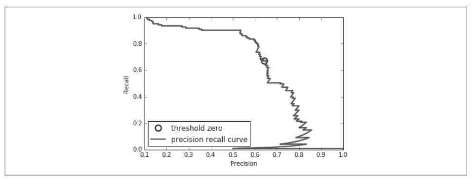
曲线上每个点对应 decision_function 的一个可能阈值。可以看到，准确率约 0.75 的位置对应召回率 0.4；黑色圆圈是阈值为 0 的点——调用 predict 时选择的就是这个折中点。读图要点：
- 曲线越靠近右上角，分类器越好：右上角的点表示同一个阈值下准确率和召回率都高。
- 曲线从左上角开始：对应非常低的阈值，把所有样本都划为正类（召回率 1，准确率低）。
- 提高阈值让曲线向准确率更高的方向移动，同时召回率降低；继续增大阈值，大多数被划为正类的点都是真正例，准确率很高但召回率更低。
- 随着准确率的升高，模型越能保持较高的召回率，模型越好。本例中曲线左侧相对平坦：准确率提到 0.5 之前召回率掉得不多；准确率大于 0.5 之后，每增加一点都要牺牲很多召回率。
不同的分类器可能在曲线的不同位置（不同工作点）表现更好。比较同一数据集上训练的 SVM 与随机森林：RandomForestClassifier 没有 decision_function，只有 predict_proba。precision_recall_curve 的第二个参数应该是正类（类别 1）的确定性度量，所以传入样本属于类别 1 的概率，即 rf.predict_proba(X_test)[:, 1]。二分类 predict_proba 的默认阈值是 0.5，在曲线上标出这个点（图 5-14）：
# ===== 书 5.3.2 节第 5 小节：SVC 与随机森林的 PR 曲线对比 =====
from sklearn.ensemble import RandomForestClassifier
rf = RandomForestClassifier(n_estimators=100, random_state=0, max_features=2)
rf.fit(X_train, y_train)
# RandomForestClassifier有predict_proba，但没有decision_function
precision_rf, recall_rf, thresholds_rf = precision_recall_curve(
y_test, rf.predict_proba(X_test)[:, 1])
plt.plot(precision, recall, label="svc")
plt.plot(precision[close_zero], recall[close_zero], 'o', markersize=10,
label="threshold zero svc", fillstyle="none", c='k', mew=2)
plt.plot(precision_rf, recall_rf, label="rf")
close_default_rf = np.argmin(np.abs(thresholds_rf - 0.5))
plt.plot(precision_rf[close_default_rf], recall_rf[close_default_rf], '^', c='k',
markersize=10, label="threshold 0.5 rf", fillstyle="none", mew=2)
plt.xlabel("Precision")
plt.ylabel("Recall")
plt.legend(loc="best")
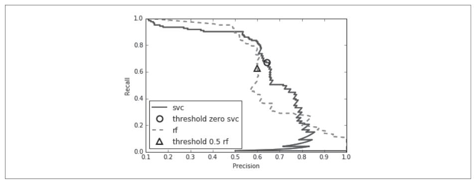
随机森林在极值处（要求很高召回率或很高准确率）表现更好；中间位置（准确率约 0.7）SVM 更好。如果只看 f1-分数比较总体性能，就会遗漏这些细节——f1-分数只反映准确率-召回率曲线上的一个点，即默认阈值对应的那个：
# ===== 书 5.3.2 节第 5 小节：只看 f1 会漏掉细节 =====
print("f1_score of random forest: {:.3f}".format(
f1_score(y_test, rf.predict(X_test))))
print("f1_score of svc: {:.3f}".format(f1_score(y_test, svc.predict(X_test))))
比较两条准确率-召回率曲线能提供大量洞见，但过程相当麻烦。对自动化模型对比，我们希望总结曲线包含的信息，而不限于某个特定阈值或工作点。总结 PR 曲线的一种方法是计算曲线下的积分（面积），也叫平均准确率（average precision）（译注 8：PR 曲线下面积与平均准确率之间还有一些较小的技术区别，这个解释是大致思路）。用 average_precision_score 函数计算。因为要计算曲线并考虑多个阈值，需要传入 decision_function 或 predict_proba 的结果，而不是 predict 的结果：
# ===== 书 5.3.2 节第 5 小节：平均准确率 AP =====
from sklearn.metrics import average_precision_score
ap_rf = average_precision_score(y_test, rf.predict_proba(X_test)[:, 1])
ap_svc = average_precision_score(y_test, svc.decision_function(X_test))
print("Average precision of random forest: {:.3f}".format(ap_rf))
print("Average precision of svc: {:.3f}".format(ap_svc))
对所有可能阈值取平均时，随机森林和 SVC 差不多好（随机森林稍稍领先）——这与 f1_score 给出的结论大为不同。因为平均准确率是曲线下的面积，它总是返回 0（最差）到 1（最好）之间的值；随机分配 decision_function 的分类器，其平均准确率等于数据集中正例样本所占的比例。
6. 受试者工作特征（ROC）与AUC#
还有一种常用工具可以分析不同阈值下分类器的行为：受试者工作特征曲线（receiver operating characteristics curve），简称 ROC 曲线（ROC curve）。与 PR 曲线类似，ROC 曲线考虑给定分类器的所有可能阈值，但它显示的是假正例率（false positive rate，FPR）和真正例率（true positive rate，TPR），而不是准确率和召回率。回想一下：真正例率只是召回率的另一个名字，而假正例率是假正例占所有反类样本的比例：
用 roc_curve 函数计算 ROC 曲线：
# ===== 书 5.3.2 节第 6 小节：SVM 的 ROC 曲线 =====
from sklearn.metrics import roc_curve
fpr, tpr, thresholds = roc_curve(y_test, svc.decision_function(X_test))
plt.plot(fpr, tpr, label="ROC Curve")
plt.xlabel("FPR")
plt.ylabel("TPR (recall)")
# 找到最接近于0的阈值
close_zero = np.argmin(np.abs(thresholds))
plt.plot(fpr[close_zero], tpr[close_zero], 'o', markersize=10,
label="threshold zero", fillstyle="none", c='k', mew=2)
plt.legend(loc=4)
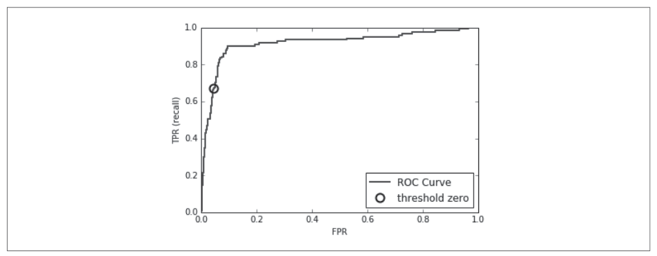
对 ROC 曲线，理想的曲线要靠近左上角：希望召回率很高，同时假正例率很低。从曲线看：与默认阈值 0 相比，我们可以得到明显更高的召回率（约 0.9），而 FPR 仅稍有增加——最接近左上角的点可能是比默认选择更好的工作点。同样注意：不应该在测试集上选择阈值，而应该在单独的验证集上选择。
图 5-16 是随机森林与 SVM 的 ROC 曲线对比：
# ===== 书 5.3.2 节第 6 小节：SVM 与随机森林的 ROC 对比 =====
from sklearn.metrics import roc_curve
fpr_rf, tpr_rf, thresholds_rf = roc_curve(y_test, rf.predict_proba(X_test)[:, 1])
plt.plot(fpr, tpr, label="ROC Curve SVC")
plt.plot(fpr_rf, tpr_rf, label="ROC Curve RF")
plt.xlabel("FPR")
plt.ylabel("TPR (recall)")
plt.plot(fpr[close_zero], tpr[close_zero], 'o', markersize=10,
label="threshold zero SVC", fillstyle="none", c='k', mew=2)
close_default_rf = np.argmin(np.abs(thresholds_rf - 0.5))
# 原书此处误写为 tpr[close_default_rf]（拿 SVC 的 TPR 数组配 RF 的阈值索引），已改为 tpr_rf
plt.plot(fpr_rf[close_default_rf], tpr_rf[close_default_rf], '^', markersize=10,
label="threshold 0.5 RF", fillstyle="none", c='k', mew=2)
plt.legend(loc=4)
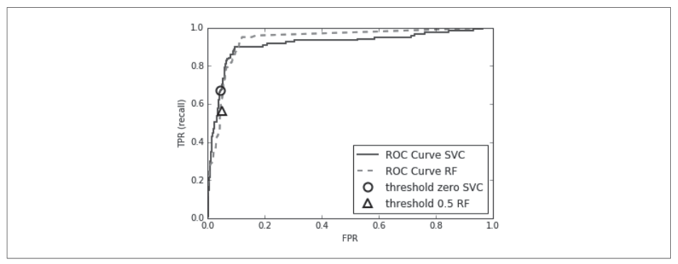
与 PR 曲线一样，我们通常希望用一个数字总结 ROC 曲线——曲线下的面积，通常称为 AUC（area under the curve）（这里的曲线指 ROC 曲线）。用 roc_auc_score 函数计算：
# ===== 书 5.3.2 节第 6 小节：计算 AUC =====
from sklearn.metrics import roc_auc_score
rf_auc = roc_auc_score(y_test, rf.predict_proba(X_test)[:, 1])
svc_auc = roc_auc_score(y_test, svc.decision_function(X_test))
print("AUC for Random Forest: {:.3f}".format(rf_auc))
print("AUC for SVC: {:.3f}".format(svc_auc))
利用 AUC 比较，随机森林比 SVM 略好。AUC 的性质：
- 取值总在 **0（最差）到 1（最好）**之间；
- 随机预测的 AUC 总是 0.5，无论类别多么不平衡；
- AUC 可以解释为评估正例样本的排名（ranking）：等价于"从正类随机挑一个点，其分数比从反类随机挑的一个点更高"的概率。AUC=1 意味着所有正类点的分数高于所有反类点；
- 对不平衡类别的分类问题，用 AUC 做模型选择通常比用精度更有意义。
回到"9 与其他"的 digits 例子：用 SVM 分类，比较三种不同的核宽度 gamma（图 5-17）：
# ===== 书 5.3.2 节第 6 小节：不同 gamma 的精度与 AUC =====
y = digits.target == 9
X_train, X_test, y_train, y_test = train_test_split(
digits.data, y, random_state=0)
plt.figure()
for gamma in [1, 0.05, 0.01]:
svc = SVC(gamma=gamma).fit(X_train, y_train)
accuracy = svc.score(X_test, y_test)
auc = roc_auc_score(y_test, svc.decision_function(X_test))
fpr, tpr, _ = roc_curve(y_test, svc.decision_function(X_test))
print("gamma = {:.2f} accuracy = {:.2f} AUC = {:.2f}".format(
gamma, accuracy, auc))
plt.plot(fpr, tpr, label="gamma={:.3f}".format(gamma))
plt.xlabel("FPR")
plt.ylabel("TPR")
plt.xlim(-0.01, 1)
plt.ylim(0, 1.02)
plt.legend(loc="best")
gamma = 1.00 accuracy = 0.90 AUC = 0.50
gamma = 0.05 accuracy = 0.90 AUC = 0.90
gamma = 0.01 accuracy = 0.90 AUC = 1.00
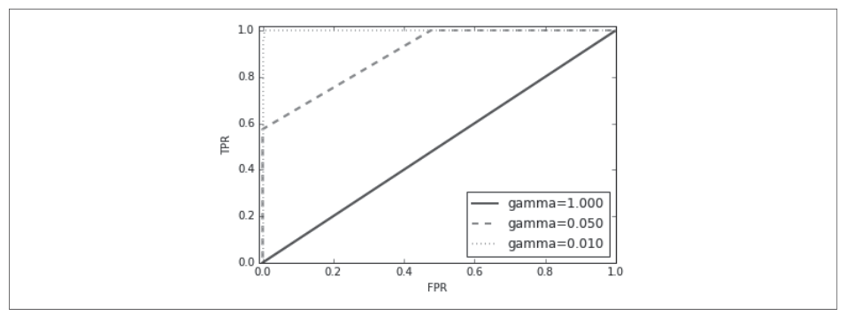
三种 gamma 设置的精度完全相同，都等于 90%——这可能与随机选择的性能相同，也可能不同，精度无法区分。但看 AUC 和对应曲线，三个模型有明显区别：
- gamma=1.0：AUC 处于随机水平（0.5），decision_function 的输出与随机结果一样好；
- gamma=0.05：性能大幅提升至 AUC=0.9；
- gamma=0.01：得到等于 1.0 的完美 AUC——根据决策函数，所有正类点的排名高于所有反类点。换句话说，利用正确的阈值，这个模型可以对所有数据进行完美分类！知道这一点后，可以调节模型阈值得到很好的预测结果——如果仅使用精度，将永远不会发现这一点（译注 10：仔细看 gamma=0.01 的曲线，左上角有一个很小的弯曲，说明至少有一个点的排名是错的；AUC=1.0 是舍入到两位小数的结果）。
因此，强烈建议在不平衡数据上评估模型时使用 AUC。但记住：AUC 没有使用默认阈值——为了从高 AUC 的模型中得到有用的分类结果，可能还需要调节决策阈值。
拓展：ROC 曲线是怎么一步步画出来的
把所有样本按分类器分数（decision_function 或 predict_proba）从高到低排序，从最低分开始逐步提高阈值：每经过一个样本就向右（若它是反类，FPR 分母加一、分子加一）或向上（若它是正类，TPR 加一）走一格，把这些 (FPR, TPR) 点连起来就是 ROC 曲线。分数完全随机时，每一步"向上"和"向右"的概率成正类反类的比例，长期走向就是 45° 对角线——这正是"随机分类器 AUC=0.5"的几何来源；而完美的分类器排序把所有正类排前面，曲线先冲到 (0,1) 再横着走，AUC=1。AUC 的概率解释（正例分数高于反例的概率）也可以从这个构造直接看出来。
5.3.3 多分类指标#
多分类的所有指标基本上都来自二分类指标，但要对所有类别进行平均。多分类的精度定义为正确分类的样本所占的比例；类别不平衡时精度同样不是好度量——想象一个三分类问题，85% 属于类别 A、10% 属于 B、5% 属于 C，在这上面 85% 的精度说明了什么？一般来说，多分类结果比二分类结果更难理解。除了精度，常用工具有混淆矩阵和分类报告（二分类的例子中都见过）。把它们应用到 digits 数据集 10 种手写数字的分类任务：
# ===== 书 5.3.3 节：digits 十分类的精度与混淆矩阵 =====
from sklearn.metrics import accuracy_score
X_train, X_test, y_train, y_test = train_test_split(
digits.data, digits.target, random_state=0)
lr = LogisticRegression().fit(X_train, y_train)
pred = lr.predict(X_test)
print("Accuracy: {:.3f}".format(accuracy_score(y_test, pred)))
print("Confusion matrix:\n{}".format(confusion_matrix(y_test, pred)))
Accuracy: 0.953
Confusion matrix:
[[37 0 0 0 0 0 0 0 0 0]
[ 0 39 0 0 0 0 2 0 2 0]
[ 0 0 41 3 0 0 0 0 0 0]
[ 0 0 1 43 0 0 0 0 0 1]
[ 0 0 0 0 38 0 0 0 0 0]
[ 0 1 0 0 0 47 0 0 0 0]
[ 0 0 0 0 0 0 52 0 0 0]
[ 0 1 0 1 1 0 0 45 0 0]
[ 0 3 1 0 0 0 0 0 43 1]
[ 0 0 0 1 0 1 0 0 1 44]]
精度 95.3%，相当好了。混淆矩阵提供更多细节：与二分类相同，每一行对应真实标签，每一列对应预测标签。图 5-18 是视觉上更直观的版本：
# ===== 书 5.3.3 节：混淆矩阵热图 =====
scores_image = mglearn.tools.heatmap(
confusion_matrix(y_test, pred), xlabel='Predicted label',
ylabel='True label', xticklabels=digits.target_names,
yticklabels=digits.target_names, cmap=plt.cm.gray_r, fmt="%d")
plt.title("Confusion matrix")
plt.gca().invert_yaxis()
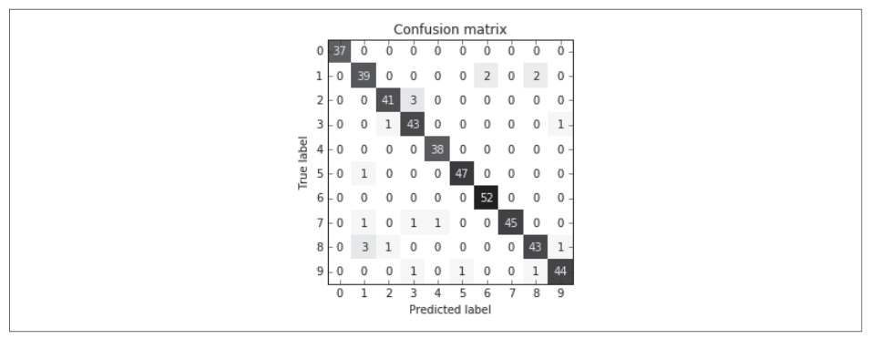
读法举例：类别 0（数字 0）包含 37 个样本，全部被划为类别 0（第一行其他元素全 0——类别 0 没有假反例）；同时没有其他数字被误分类为类别 0（第一列其他元素全 0——类别 0 没有假正例）。混淆主要发生在字形相近的数字之间：数字 2（第 3 行）有 3 个被划到数字 3（第 4 列）；一个数字 3 被划到数字 2（第 4 行第 3 列）；一个数字 8 被划到数字 2（第 9 行第 3 列）。
用 classification_report 计算每个类别的准确率、召回率和 f-分数：
precision recall f1-score support
0 1.00 1.00 1.00 37
1 0.89 0.91 0.90 43
2 0.95 0.93 0.94 44
3 0.90 0.96 0.92 45
4 0.97 1.00 0.99 38
5 0.98 0.98 0.98 48
6 0.96 1.00 0.98 52
7 1.00 0.94 0.97 48
8 0.93 0.90 0.91 48
9 0.96 0.94 0.95 47
avg / total 0.95 0.95 0.95 450
不出所料：类别 0 的准确率和召回率都是完美的 1（无混淆）；类别 7 准确率为 1（没有其他类被误判为 7）；类别 6 没有假反例，召回率等于 1。模型对类别 8 和类别 3 的表现特别不好。
对多分类不平衡数据集，最常用的指标是多分类版本的 f-分数。其想法是：对每个类别计算一个二分类 f-分数（该类别作正类，其他所有类别组成反类），然后用以下策略之一对这些按类别 f-分数做平均：
- "宏"（macro）平均：计算未加权的按类别 f-分数——对所有类别给出相同权重，无论类别样本量大小。
- "加权"（weighted）平均：以每个类别的**支持（support）**作为权重计算按类别 f-分数的平均——分类报告最后一行给出的就是这个值。
- "微"（micro）平均：计算所有类别中假正例、假反例和真正例的总数，再利用这些总计数计算准确率、召回率和 f-分数。
如果你对每个样本等同看待，推荐用"微"平均 f1-分数；如果对每个类别等同看待，推荐用"宏"平均 f1-分数：
# ===== 书 5.3.3 节：micro 与 macro 平均 =====
print("Micro average f1 score: {:.3f}".format
(f1_score(y_test, pred, average="micro")))
print("Macro average f1 score: {:.3f}".format
(f1_score(y_test, pred, average="macro")))
拓展：三种平均手算一遍
用一个极端例子记牢差别：类 0 有 300 个样本，类 1、类 2 各只有 1 个样本；模型对类 0 完美（f1=1.0），对类 1、类 2 一塌糊涂（f1=0.0）。macro = (1.0+0.0+0.0)/3 ≈ 0.33——少数类再小也有一票；weighted = (300·1.0 + 1·0 + 1·0)/302 ≈ 0.993——大类几乎"代言"了整个报告；micro 则把三类混淆格加总再算，约等于把多数类当整体的成绩。所以：类别越不平衡，macro 与 weighted/micro 的差距越大；本书 digits 十分类比较均衡，所以三者几乎相同（0.953 vs 0.954）。
5.3.4 回归指标#
对回归问题可以像分类问题一样详细评估，例如对比分析"目标值估计过高"与"估计过低"。但对我们见过的大多数应用来说，使用默认 \(R^2\) 就足够了——它由所有回归器的 score 方法给出。业务决策有时是根据**均方误差（MSE）或平均绝对误差（MAE）**做出的，这可能会鼓励人们用这些指标来调参。但一般来说，\(R^2\) 是评估回归模型更直观的指标。
拓展：\(R^2\) 为什么直观，以及它可以为负
\(R^2 = 1 - \frac{\sum_i (y_i - \hat{y}_i)^2}{\sum_i (y_i - \bar{y})^2}\)，分子是模型的残差平方和，分母是"什么都不做、只会预测均值"这个基线的平方和。所以 \(R^2=1\) 表示完美预测，\(R^2=0\) 表示模型跟"预测均值"一样差，\(R^2<0\) 表示模型比均值基线还烂—— score 的符号本身就在报警。而 MSE 的量纲是目标值单位的平方（房价模型里是"元²"），MAE 与目标同量纲，这也是业务有时偏爱 MAE 的原因：误差可以直接读成"平均差多少"。
5.3.5 在模型选择中使用评估指标#
前面详细讨论了许多评估方法。但我们通常希望在使用 GridSearchCV 或 cross_val_score 做模型选择时，能使用 AUC 等指标。scikit-learn 提供了非常简单的实现：scoring 参数，可同时用于 GridSearchCV 和 cross_val_score——只需提供一个字符串，描述想使用的评估指标。例如想在 digits"9 与其他"任务上用 AUC 评估 SVM：把分数从默认值（精度）改成 AUC，传 "roc_auc" 作为 scoring 参数的值：
# ===== 书 5.3.5 节：cross_val_score 的 scoring 参数 =====
# 分类问题的默认评分是精度
print("Default scoring: {}".format(
cross_val_score(SVC(), digits.data, digits.target == 9)))
# 指定 scoring="accuracy" 不会改变结果
explicit_accuracy = cross_val_score(SVC(), digits.data, digits.target == 9,
scoring="accuracy")
print("Explicit accuracy scoring: {}".format(explicit_accuracy))
roc_auc = cross_val_score(SVC(), digits.data, digits.target == 9,
scoring="roc_auc")
print("AUC scoring: {}".format(roc_auc))
Default scoring: [ 0.9 0.9 0.9]
Explicit accuracy scoring: [ 0.9 0.9 0.9]
AUC scoring: [ 0.994 0.99 0.996]
默认评分与显式指定的 accuracy 完全一样（都是 0.9——在不平衡任务上又一次"看不出好坏"），而 AUC 分数达到 0.99 以上，把三个模型的差距亮了出来。类似地，可以改变 GridSearchCV 中用于选择最佳参数的指标：
# ===== 书 5.3.5 节：用精度做网格搜索（刻意用了不太好的网格） =====
X_train, X_test, y_train, y_test = train_test_split(
digits.data, digits.target == 9, random_state=0)
# 我们给出了不太好的网格来说明：
param_grid = {'gamma': [0.0001, 0.01, 0.1, 1, 10]}
# 使用默认的精度：
grid = GridSearchCV(SVC(), param_grid=param_grid)
grid.fit(X_train, y_train)
print("Grid-Search with accuracy")
print("Best parameters:", grid.best_params_)
print("Best cross-validation score (accuracy): {:.3f}".format(grid.best_score_))
print("Test set AUC: {:.3f}".format(
roc_auc_score(y_test, grid.decision_function(X_test))))
print("Test set accuracy: {:.3f}".format(grid.score(X_test, y_test)))
（原书 print 字符串里多打了一个右括号 (accuracy))，本笔记已修正，输出数值不受影响。）
Grid-Search with accuracy
Best parameters: {'gamma': 0.0001}
Best cross-validation score (accuracy): 0.970
Test set AUC: 0.992
Test set accuracy: 0.973
# ===== 书 5.3.5 节：换用 AUC 评分 =====
# 使用AUC评分来代替：
grid = GridSearchCV(SVC(), param_grid=param_grid, scoring="roc_auc")
grid.fit(X_train, y_train)
print("\nGrid-Search with AUC")
print("Best parameters:", grid.best_params_)
print("Best cross-validation score (AUC): {:.3f}".format(grid.best_score_))
print("Test set AUC: {:.3f}".format(
roc_auc_score(y_test, grid.decision_function(X_test))))
print("Test set accuracy: {:.3f}".format(grid.score(X_test, y_test)))
Grid-Search with AUC
Best parameters: {'gamma': 0.01}
Best cross-validation score (AUC): 0.997
Test set AUC: 1.000
Test set accuracy: 1.000
对比结论：用精度选出的参数是 gamma=0.0001，用 AUC 选出的是 gamma=0.01。两种情形下交叉验证分数与测试集分数都一致，但用 AUC 找到的参数设置对应的 AUC 更高，甚至对应的精度也更高（译注 11：AUC 选出了精度更高的模型，可能是因为对不平衡数据来说，精度并不是模型性能的良好度量）。
对分类问题，scoring 参数最重要的取值包括：
- accuracy（默认值）、roc_auc（ROC 曲线下方的面积）、average_precision（准确率-召回率曲线下方的面积）；
- f1、f1_macro、f1_micro、f1_weighted（二分类的 f1-分数及各种加权变体）。
对回归问题，最常用的取值：r2（\(R^2\) 分数）、mean_squared_error（均方误差）、mean_absolute_error（平均绝对误差）。完整列表可在文档中找到（http://scikit-learn.org/stable/modules/model_evaluation.html#the-scoring-parameter-defining-model-evaluation-rules），也可以查看 metrics.scorer 模块中定义的 SCORERS 字典：
# ===== 书 5.3.5 节：查看所有可用的 scorer =====
from sklearn.metrics.scorer import SCORERS
print("Available scorers:\n{}".format(sorted(SCORERS.keys())))
Available scorers:
['accuracy', 'adjusted_rand_score', 'average_precision', 'f1', 'f1_macro',
'f1_micro', 'f1_samples', 'f1_weighted', 'log_loss', 'mean_absolute_error',
'mean_squared_error', 'median_absolute_error', 'precision', 'precision_macro',
'precision_micro', 'precision_samples', 'precision_weighted', 'r2', 'recall',
'recall_macro', 'recall_micro', 'recall_samples', 'recall_weighted', 'roc_auc']
版本差异
上面这行导入在现代 scikit-learn 下会直接报错：私有模块 sklearn.metrics.scorer 已在 1.x 中移除，SCORERS 字典也随后被弃用删除。替代写法是 1.0 起提供的函数：
# scikit-learn 1.x 写法
from sklearn.metrics import get_scorer_names
print(sorted(get_scorer_names()))
返回的名字列表更长（多了 neg_mean_squared_error、roc_auc_ovr 等新成员），但书里用到的 "accuracy"、"roc_auc"、"average_precision"、"f1" 等字符串全部仍然有效。
5.4 小结与展望#
本章讨论了交叉验证、网格搜索和评估指标，它们是评估与改进机器学习算法的基础。本章介绍的工具加上第 2、3 章介绍的算法，是每位机器学习从业者赖以生存的工具。
本章有两个特别的要点，需要重复一下，因为它们经常被新的从业者忽视：
- 关于交叉验证：交叉验证或测试集能帮你评估一个模型未来的表现。但如果用测试集或交叉验证来选择模型或参数，就"用完了"测试数据——再用相同的数据评估未来表现会得到过于乐观的估计。因此需要把数据集划分为训练数据（构建模型）、验证数据（选择模型与参数）、测试数据（模型评估），并且可以用交叉验证替代每一次简单划分。最常用的形式：训练/测试划分用于评估，然后对训练集使用交叉验证来选择模型与参数。
- 关于评估指标：机器学习任务的最终目标很少是"构建一个高精度模型"（如何用预测结果做商业决策的理论超出本书范围；强烈推荐 Foster Provost 和 Tom Fawcett 的 Data Science for Business，O'Reilly）。一定要确保你用于模型评估与选择的指标能很好地替代模型的实际用途。实际中分类问题很少遇到平衡的类别，假正例和假反例通常有非常不同的后果——了解这些后果，并选择相应的评估指标。
到目前为止介绍的模型评估与选择技术，是数据科学家工具箱中最重要的工具。但本章的网格搜索与交叉验证只能应用于单个监督模型——而许多模型都需要预处理（第 3 章人脸识别的例子中，提取数据的不同表示就很有用）。下一章将介绍 Pipeline 类，它允许我们在这些复杂的算法链上使用网格搜索与交叉验证。
坑与陷阱#
本章最容易栽的 8 个地方
- 拿测试集调参：朴素网格搜索在测试集上挑最优组合，"97%"其实是自我陶醉——换到真正独立的评估只剩 92%（5.2.2）。测试集只在一切决定做完之后碰一次。
- 顺序排列的标签直接 k 折：iris 前 ⅓ 全是类别 0，不分层 3 折会让每折只有一个类别，精度 0。分类用分层 k 折（sklearn 默认已替你做），或显式 shuffle（5.1.3）。
- KFold 打乱了却不固定 random_state：每次运行结果都不同，复现无从谈起。shuffle=True 必须配 random_state（5.1.3 第 1 小节）。ShuffleSplit 不设 random_state 时书印结果也不可复现（译注 ⅕/7 都在提醒这件事）。
- 把 best_score_ 当泛化性能：best_score_ 是训练集内部交叉验证的平均精度；测试集上的 score 才是泛化估计。GridSearchCV.fit 后自动用最佳参数重训的模型才是要用的那个（5.2.3 侧栏）。
- 不平衡数据只看精度：始终预测多数类就能白拿 90%（digits "9与其他"），随机 dummy 都有 80%。用 F1、AUC、分类报告；不平衡数据选模型优先看 AUC（5.3.2）。
- 在测试集上选决策阈值：阈值也是参数。decision_function 的 0、predict_proba 的 0.5 只是默认值；想按业务调阈值，用验证集或交叉验证，别碰测试集（5.3.2 第 4 小节）。
- 同人/同病人的样本散进训练与测试：分组相关数据不传 groups，泛化估计虚高（模型"认脸"而不是"认情绪"）。GroupKFold 的 groups 数组是"分组"不是"类别标签"，别弄混（5.1.3 第 4 小节）。
- n_jobs 嵌套并行：随机森林等模型内部已有 n_jobs 时，GridSearchCV 再设 n_jobs 会被 scikit-learn 拒绝——并行不允许嵌套；大数据并行时还要盯着内存（5.2.3 第 3 小节）。
速览#
- 交叉验证：数据多次划分、训练多个模型；\(k\) 折（常 5 或 10）让每个样本恰好在测试集出现一次；比单次划分稳定全面，代价约慢 \(k\) 倍；cross_val_score 不返回模型，只评估泛化性能。
- 分类默认分层 \(k\) 折、回归默认标准 \(k\) 折（新版默认 5 折，书印时代是 3 折）；KFold(shuffle=True, random_state=0) 打乱且可复现；留一法每折 1 个样本（iris 150 折均值 0.95）；ShuffleSplit 独立控制 train_size/test_size/n_splits；分组数据用 GroupKFold + groups。
- 网格搜索 = 尝试参数所有组合（36 种 C×gamma）。朴素网格在测试集上选参 → 过拟合参数、高估性能（97% → 92%）；正确姿势是训练/验证/测试三分，或训练集内 CV 选参、测试集只做最终评估。
- GridSearchCV：param_grid 字典（条件参数用字典列表），fit 后自动用最佳参数在整个训练集重训；best_params_ / best_score_ / best_estimator_ / cv_results_ 是四大常用属性；36 组合 × 5 折 = 180 个模型。
- cv_results_ 转 DataFrame 后 reshape(6,6) 画热图：先粗后细、最佳值不能贴边界；三张坏网格图对应"全区同色（缩放/范围不对）、垂直条带（只有 gamma 重要）、最优贴角（该扩范围）"。
- 嵌套 CV：cross_val_score(GridSearchCV(...), X, y, cv=5)——外层评泛化、内层选参；36×5×5=900 个模型；结果是分数列表（iris 均值 0.98），不是模型也不是参数，用于评估而非产出模型。
- n_jobs=-1 用满所有核（并行不可嵌套）；大数据或慢模型可用 ShuffleSplit(n_iter=1) 单次划分进 GridSearchCV。
- 二分类：FP（第一类错误）与 FN（第二类错误）代价通常不同；不平衡数据上精度无意义（Dummy 90%）；混淆矩阵行真实、列预测；precision=TP/(TP+FP) 控假正例，recall=TP/(TP+FN) 控假反例，F1 是二者的调和平均；classification_report 一表看全（新报告末行是 macro avg/weighted avg）。
- 阈值：decision_function 默认 0、predict_proba 默认 0.5；调阈值换 precision/recall（癌症筛查要 recall，宁可多查）；PR 曲线看全部工作点（靠右上角好），AP 总结它（0~1，随机分类器=正类占比）；ROC 用 FPR/TPR（靠左上角好），AUC=正例分数排名高于反例的概率（随机=0.5）；不平衡数据选模型首选 AUC，但记得回头调阈值。
- 多分类：混淆矩阵热图（行真列预）+ 分类报告；f1 平均三种——macro（类别平等）、weighted（按 support 加权）、micro（样本平等，对每样本看齐时用）；回归默认 \(R^2\) 足够（可为负报警）；scoring="roc_auc" 等字符串把指标接进 cross_val_score/GridSearchCV——用例中 AUC 选参 gamma=0.01 全面优于精度选参 gamma=0.0001；查 scorer 用 get_scorer_names()（SCORERS 已移除）。
术语速查#
| 英文 | 中文 | 一句话 |
|---|---|---|
| cross-validation | 交叉验证 | 数据多次划分、训练多个模型来更稳地评估泛化性能 |
| k-fold cross-validation / fold | \(k\) 折交叉验证 / 折 | 数据切成 \(k\) 份，每份轮流当测试集 |
| cross-validation splitter | 交叉验证分离器 | 定义"怎么划分"的对象（KFold 等），可传给 cv 参数 |
| stratified k-fold cross-validation | 分层 \(k\) 折交叉验证 | 每折类别比例与整体一致，分类任务的默认 |
| leave-one-out (LOO) | 留一法交叉验证 | 每折只含 1 个样本，小数据集上更细但也更贵 |
| shuffle-split cross-validation | 打乱划分交叉验证 | 任意 train_size/test_size/迭代次数，可用部分数据 |
| StratifiedShuffleSplit | 分层打乱划分 | 打乱划分的分层版，分类更可靠 |
| GroupKFold / groups | 分组 \(k\) 折 / 分组数组 | 同组样本不跨训练/测试集；groups 不是类别标签 |
| grid search | 网格搜索 | 尝试所关心参数的所有组合 |
| validation set / dev set | 验证集 / 开发集 | 用来选模型与参数的数据；测试集之外再划出的"决策区" |
| data leakage | 数据泄漏 | 测试/验证数据的信息溜进了建模过程，导致高估性能 |
| nested cross-validation | 嵌套交叉验证 | 外层评泛化、内层选参的两层 CV，结果是分数列表 |
| meta-estimator | 元估计器 | 用另一个估计器包装而成的估计器，如 GridSearchCV |
| param_grid | 参数网格 | 字典（键=参数名，值=取值列表）或字典列表（条件参数） |
| best_params_ / best_score_ / best_estimator_ | 最佳参数 / 最佳 CV 分数 / 最佳模型 | GridSearchCV 的三大结果属性 |
| cv_results_ | 交叉验证结果字典 | 每种参数组合的所有折分数、均值、标准差、排名 |
| n_jobs | 并行内核数 | -1 用满全部内核；并行不可嵌套 |
| business metric / business impact | 商业指标 / 商业影响 | 应用的最终目标 / 选某算法带来的后果 |
| positive class / negative class | 正类 / 反类 | 正类是我们"要寻找的类" |
| false positive / false negative (FP/FN) | 假正例 / 假反例 | 错误的阳性/阴性预测；统计学称第一/第二类错误 |
| true positive / true negative (TP/TN) | 真正例 / 真反例 | 正类/反类中被正确分类的样本 |
| imbalanced dataset | 不平衡数据集 | 一个类别远多于另一类；实践中是常态 |
| confusion matrix | 混淆矩阵 | 行=真实类别、列=预测类别；对角线=正确分类 |
| precision (PPV) | 准确率（阳性预测值） | 预测为正例的样本中真正例的比例，控假正例 |
| recall (sensitivity, hit rate, TPR) | 召回率（灵敏度、命中率、真正例率） | 正类样本被找出来的比例，控假反例 |
| f1-score | f1 分数 | precision 与 recall 的调和平均，综合二者的单一数字 |
| support | 支持 | 该类别真实样本的数量 |
| operating point | 工作点 | 按业务设定的精度/召回率要求（阈值决策） |
| precision-recall curve | 准确率-召回率曲线 | 所有阈值下 (precision, recall) 的轨迹，越靠右上角越好 |
| average precision (AP) | 平均准确率 | PR 曲线下面积，0~1；随机分类器=正类占比 |
| ROC curve | ROC 曲线（受试者工作特征曲线） | 所有阈值下 (FPR, TPR) 的轨迹，越靠左上角越好 |
| FPR | 假正例率 | FP / (FP + TN)：反类里被误判的比例 |
| AUC (area under the curve) | ROC 曲线下面积 | 正例分数排名高于反例的概率；随机=0.5，不平衡数据首选 |
| calibration | 校准 | 模型的概率输出能真实反映不确定性的程度 |
| macro / weighted / micro average | 宏 / 加权 / 微平均 | 多分类 f1 的三种平均：类别平等 / 按 support 加权 / 总计数 |
| R² / MSE / MAE | 决定系数 / 均方误差 / 平均绝对误差 | 回归三大指标；score 默认给 \(R^2\)，可为负 |
| scoring | 评分参数 | 字符串指定评估指标，可进 cross_val_score 与 GridSearchCV |
覆盖自查#
原书小节 → 笔记位置对照
| 原书小节 / 内容 | 笔记位置 |
|---|---|
| 章首：train_test_split + score 老流程复习（In[2]） | 章首引言 |
| 5.1 交叉验证（\(k\) 折概念、图 5-1、In[3]） | 5.1 节 + 图 5-1 |
| 5.1.1 scikit-learn 中的交叉验证（cross_val_score、cv=5、平均值、版本差异） | 5.1.1 节 |
| 5.1.2 交叉验证的优点（三条优点、\(k\) 倍成本、"不返回模型"提醒、拓展 \(k\) 的选择） | 5.1.2 节 |
| 5.1.3 分层 \(k\) 折（iris 顺序标签、图 5-2、90/10 例子、回归默认） | 5.1.3 节 + 图 5-2 |
| 5.1.3-1 对交叉验证的更多控制（KFold 5 折 / 3 折 / shuffle） | 5.1.3 第 1 小节 |
| 5.1.3-2 留一法交叉验证（150 折、0.95） | 5.1.3 第 2 小节 |
| 5.1.3-3 打乱划分交叉验证（图 5-3、ShuffleSplit、StratifiedShuffleSplit、译注 1） | 5.1.3 第 3 小节 + 图 5-3 |
| 5.1.3-4 分组交叉验证（人脸/医疗/语音场景、GroupKFold、图 5-4、KFold/StratifiedKFold/GroupKFold 最常用） | 5.1.3 第 4 小节 + 图 5-4 |
| 5.2 网格搜索（SVC 的 C/gamma、36 组合网格表） | 5.2 节引言 + 表格 |
| 5.2.1 简单网格搜索（双 for 循环、0.97） | 5.2.1 节 |
| 5.2.2 参数过拟合的风险与验证集（三分法、图 5-5、96%→92%、泄漏段） | 5.2.2 节 + 图 5-5 |
| 5.2.3 带交叉验证的网格搜索（for 循环版、180 模型、图 5-6、图 5-7、术语提醒与元估计器） | 5.2.3 节引言 + 图 5-6/5-7 |
| 5.2.3 GridSearchCV 用法（param_grid 字典、fit、score、best_* 三件套、版本差异） | 5.2.3 节 + 版本差异注 |
| 5.2.3-1 分析交叉验证的结果（cv_results_、热图 5-8、坏网格 5-9、拓展对数网格） | 5.2.3 第 1 小节 + 图 5-8/5-9 |
| 5.2.3-2 在非网格的空间中搜索（条件参数、字典列表、In[36] 删节表） | 5.2.3 第 2 小节 |
| 5.2.3-3 不同 CV 策略 +（1）嵌套交叉验证（一行版、mermaid 两层图、nested_cv 展开版、900 模型、勘误 best_parms） | 5.2.3 第 3 小节（1） |
| 5.2.3-3（2）交叉验证与网格搜索并行（n_jobs、不嵌套、spark-sklearn） | 5.2.3 第 3 小节（2） |
| 5.3 评估指标与评分（引言） | 5.3 节引言 |
| 5.3.1 牢记最终目标（商业指标/商业影响、无人车例子、译注 4） | 5.3.1 节 |
| 5.3.2-1 错误类型（癌症筛查、FP/FN、I/II 类错误、美元值） | 5.3.2 第 1 小节 |
| 5.3.2-2 不平衡数据集（点击预测 99:1、digits 9 与其他、Dummy 系列四个分数、版本差异） | 5.3.2 第 2 小节 |
| 5.3.2-3 混淆矩阵（图 5-10/5-11、四模型矩阵对比、accuracy/precision/recall/F1 公式、f1 四分数、classification_report 三份、译注 7、版本差异） | 5.3.2 第 3 小节 + 图 5-10/5-11 |
| 5.3.2-4 考虑不确定性（图 5-12、阈值 -0.8 前后报告、测试集上别调阈值的提醒、校准） | 5.3.2 第 4 小节 + 图 5-12 |
| 5.3.2-5 准确率-召回率曲线（工作点、图 5-13、SVM vs RF 图 5-14、f1 只看一点、AP 与译注 8） | 5.3.2 第 5 小节 + 图 5-13/5-14 |
| 5.3.2-6 ROC 与 AUC（FPR 公式、图 5-15/5-16、AUC 三性质与排名解释、digits 三 gamma 图 5-17、译注 9/10） | 5.3.2 第 6 小节 + 图 5-15/5-16/5-17 |
| 5.3.3 多分类指标（10 类混淆矩阵与热图 5-18、classification_report、macro/weighted/micro） | 5.3.3 节 + 图 5-18 |
| 5.3.4 回归指标（\(R^2\) 足够、MSE/MAE、拓展负 \(R^2\)） | 5.3.4 节 |
| 5.3.5 在模型选择中使用评估指标（scoring、accuracy vs AUC 两份网格、译注 11、SCORERS 与版本差异） | 5.3.5 节 |
| 5.4 小结与展望（两个要点、Data Science for Business、Pipeline 预告） | 5.4 节 |